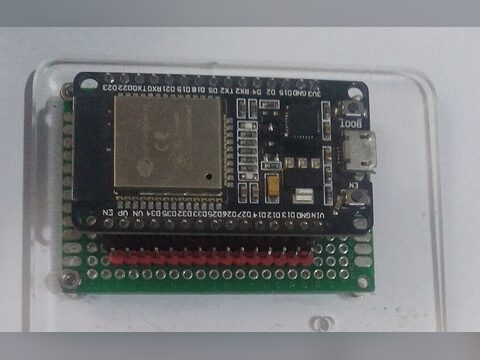
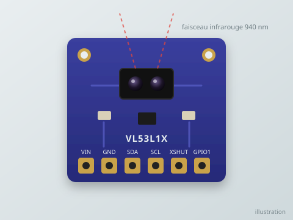
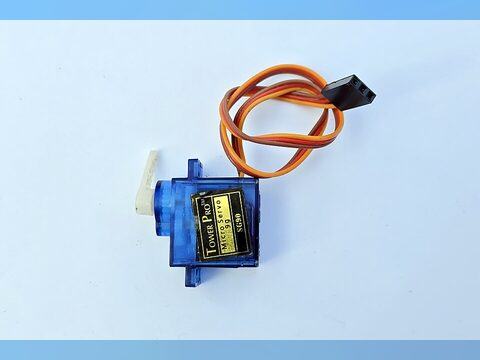
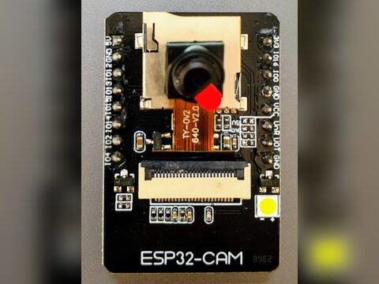
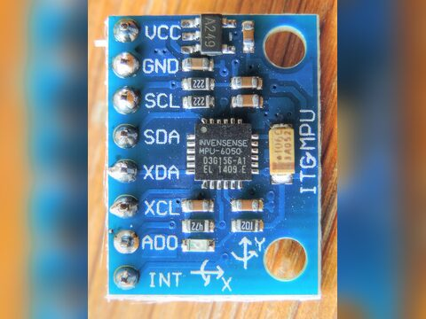
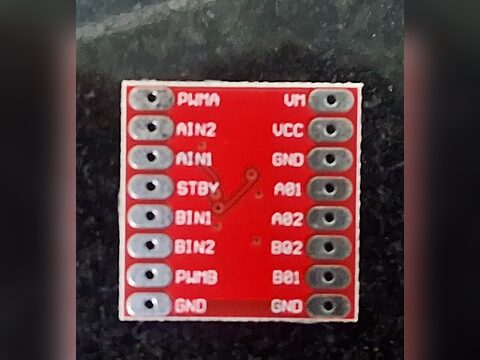
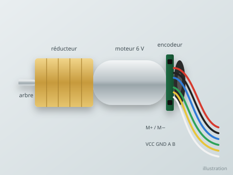
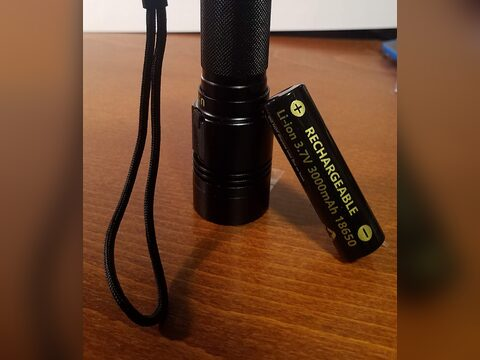
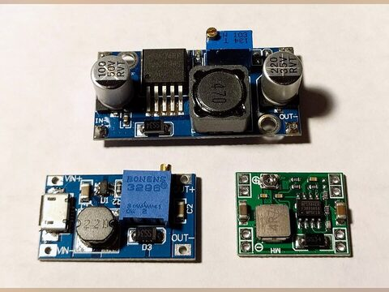
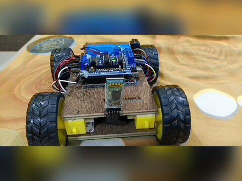

Manuel du projet · Travaux Avant Projet · L3 Électronique
Un robot qui dessine la carte d'une pièce, puis s'y déplace seul.
Ce site est le manuel du projet, du premier achat à la soutenance. Chaque brique est d'abord testée seule sur la table (phase A), puis tout est assemblé sur la voiture (phase B). Suivez les pages dans l'ordre et cochez les étapes au fur et à mesure.
≈ 100 €de budget, ESP32 de secours et accessoires compris
4 / 4modules du semestre mobilisés
Ce que fera le robot à la fin
1 · BalayerUn capteur laser monté sur un servomoteur mesure les distances sur 180°, puis le robot fait demi-tour pour couvrir 360°.
2 · CartographierLe PC transforme les mesures en grille d'occupation : libre, mur ou inconnu, affichée en direct.
3 · Se recalerUne caméra lit des marqueurs ArUco collés aux murs ; un filtre de Kalman corrige la position.
4 · NaviguerOn clique plusieurs points sur la carte ; le robot calcule son chemin (A*) et va de l'un à l'autre.
Le parcours en deux phases
La phase A se fait entièrement sur une plaque d'essai, sans châssis : chaque capteur et chaque actionneur est validé seul. La phase B commence quand tout fonctionne : on monte la voiture et on assemble les briques.
Phase A · sur table
Plaque d'essai, câble USB, aucune pièce mobile sauf le servo et les roues en l'air.
Chaque bloc de code donne le rôle du fichier, ce qu'il doit faire étape par étape, les formules et les fonctions utiles, puis les signatures à remplir (repérées par « À compléter »). Les mêmes fichiers se trouvent dans firmware/ et pc/ du dépôt.
Lien avec les modules du semestre
Module
Ce qu'on réalise
TPs principaux
Fonctions Électroniques
Pont en H, mise en forme des encodeurs (résistances de tirage), régulation 5 V, pont diviseur de mesure, découplage, réponse d'un moteur (1er ordre)
TP7, TP8
Traitement du Signal
Filtre médian, échantillonnage, intégration du gyroscope, traitement d'image (seuillage, contours), filtre de Kalman
TP2, TP3, TP5, TP6, TP11
Systèmes Microprocesseurs
GPIO, PWM (LEDC), interruptions, timers, bus I2C, ADC, programme temps réel non bloquant
TP1, TP3, TP7, TP9
Réseaux Informatiques Locaux
Adressage IP, sockets UDP, protocole applicatif, latence et pertes, flux HTTP de la caméra, Wireshark
TP4, TP5, TP9
Quatre règles pour que le projet se passe bien
Une brique à la fois
Ne jamais brancher deux nouveautés en même temps. Si un test échoue, on sait exactement quoi chercher.
Valider avant d'assembler
Chaque TP se termine par des critères mesurables. On ne passe au suivant que lorsqu'ils sont atteints.
Garder des traces
Courbes, CSV, photos du câblage, vidéos : tout va dans le dossier mesures/. Le rapport se rédige avec.
Respecter les batteries
Accus Li-ion protégés, chargeur adapté, jamais en court-circuit, jamais laissés en charge sans surveillance.
Chapitre 01
Matériel détaillé
Tout ce qu'il faut acheter, avec les caractéristiques à vérifier avant de commander. Commandez tout dès la première semaine : les délais de livraison sont la première cause de retard.
À propos des prix
Les prix sont des ordres de grandeur en euros, relevés sur les boutiques en ligne de composants. Les prix locaux varient. La colonne « TP » indique à partir de quand la pièce est nécessaire : la phase A peut commencer avec les pièces marquées A seulement.
Liste d'achat
Cochez les pièces déjà achetées ; le reste à acheter est recalculé en bas du tableau.
Composant
Qté
À vérifier avant d'acheter
TP
≈ €
ESP32‑DevKitC V4, version 32E (module ESP32‑WROOM‑32E, 38 broches)
2
Prendre la version 32E (antenne sur la carte) : ni 32UE (antenne externe obligatoire), ni VE/VIE (module WROVER : GPIO 16 et 17 réservés à la PSRAM). Pas de LED utilisateur : la LED externe est dans les passifs. Câble micro‑USB de données. La deuxième sert de secours.
A TP0
12
Capteur laser VL53L1X (module I2C)
1
Bien L1X (portée 4 m), pas le VL53L0X (2 m). Module avec régulateur, alimentable en 3,3 V.
A TP2
9
Servomoteur SG90 (ou MG90S à pignons métal)
1
Course 180°. Le MG90S a moins de jeu : carte plus nette.
A TP3
3
ESP32‑CAM AI‑Thinker + caméra OV2640 et sa carte ESP32‑CAM‑MB
1
La carte MB (port USB) sert à la programmer. Souvent vendues ensemble.
A TP5
10
MPU6050 (module GY‑521)
1
Gyroscope + accéléromètre, I2C, adresse 0x68.
A TP6
2
Driver moteur TB6612FNG (module)
1
2 voies, 1,2 A continu et 3,2 A crête par voie, VM de 4,5 à 13,5 V.
A TP7
3
Motoréducteurs avec encodeur à effet Hall, au format TT (ou N20 / JGA25‑370 avec leurs supports et leurs roues)
2
Encodeur 2 voies (A et B) obligatoire. Le format TT se fixe directement sur les châssis 2 roues et prend leurs roues. Viser 150 à 300 tr/min en sortie et un courant en charge ≤ 1,2 A.
A TP7
16
Kit châssis 2 roues : plaque, 2 roues ≈ 65 mm, 1 roue folle à bille
1
Ces kits sont presque toujours livrés avec 2 moteurs TT jaunes sans encodeur : on garde la plaque, les roues et la roue folle, et on remplace les moteurs (ligne au-dessus). Plaque assez large pour la batterie, la tour laser et la caméra (≈ 15 × 20 cm).
B TP8
10
2 accus Li‑ion 18650 protégés + support 2S + chargeur
1 lot
≥ 2000 mAh chacun. En série : 7,4 V nominal, 8,4 V chargé, 6,0 V à décharge. Nécessaires dès le TP3 : sans alimentation de labo, ce sont elles qui alimentent l'abaisseur et les moteurs sur table.
A TP3
14
Abaisseur DC‑DC 5 V, 3 A (LM2596, XL4015 ou MP1584)
1
Courant ≥ 3 A. Le régler à 5,0 V au multimètre avant de brancher quoi que ce soit.
A TP3
2
Interrupteur à bascule + porte-fusible et fusible 3 A
1
Le fusible protège contre un court-circuit de la batterie. À câbler dès le premier usage de la batterie.
LED externe du TP0 (la DevKitC V4 n'en a pas), résistances de tirage des encodeurs, pont diviseur batterie, découplage.
A TP0
3
Plaque d'essai 830 points + fils Dupont M‑M, M‑F, F‑F (40 de chaque)
1
Toute la phase A se fait dessus.
A TP1
6
Plaque à pastilles, borniers à vis, entretoises M3, colliers, gaine thermo
1 lot
Pour un câblage fiable sur la voiture.
B TP8
4
Câbles USB de données
2
Beaucoup de câbles ne font que la charge : tester avec la carte.
A TP0
3
Marqueurs ArUco et damier imprimés, carton plume ou carton rigide
1 lot
Impression à 100 %, sans « ajuster à la page ».
A TP5
2
optionLiDAR RPLIDAR A1
1
Remplace le laser + servo : 360° en 0,2 s, carte bien plus propre. Non compté dans le total.
—
≈ 100
Total (hors option)
101
Reste à acheter
101
Les composants un par un
Pour chaque pièce : à quoi elle sert dans le robot, puis ce qu'il faut savoir pour bien l'utiliser. Filtrez par famille pour retrouver une pièce rapidement.

ESP32‑DevKitC V4 (WROOM‑32E)
TP0
Son rôle : c'est le cerveau temps réel du robot. Il lit les capteurs, régule la vitesse des roues 50 fois par seconde, fait tourner le balayage et échange avec le PC par Wi‑Fi. Tout ce qui demande du calcul lourd (carte, vision, Kalman, A*) part sur le PC.
Double cœur 240 MHz, 520 Ko de RAM, Wi‑Fi 2,4 GHz
Logique en 3,3 V : aucune broche ne tolère 5 V
Alimentation par USB ou par la broche 5V, jamais les deux à la fois
Boutons EN (redémarrage) et BOOT (GPIO0) ; LED rouge d'alimentation seulement, pas de LED utilisateur : LED externe sur GPIO2
GPIO 6 à 11 (broches CLK, D0–D3, CMD) reliées à la mémoire flash : ne jamais les utiliser
GPIO34 à GPIO39 : entrées seules, sans résistance de tirage interne
ADC2 inutilisable quand le Wi‑Fi est actif : on mesure sur l'ADC1 (GPIO32‑39)
Photo : une carte ESP32 voisine ; la DevKitC V4 a 38 broches et les mêmes GPIO

Capteur laser VL53L1X
TP2
Son rôle : c'est l'œil du radar. Il mesure la distance jusqu'au premier obstacle dans la direction où il regarde. Monté sur le servo, il donne 61 distances par balayage, avec lesquelles le PC dessine les murs.
Mesure le temps d'aller-retour d'une impulsion infrarouge (940 nm)
Portée jusqu'à 4 m en mode long, résolution 1 mm
Champ de vision ≈ 27° : un mur vu de biais s'étale sur plusieurs angles
Bus I2C, adresse 0x29, jusqu'à 50 mesures/s
Moins fiable sur le noir mat, le verre et en plein soleil

Servomoteur SG90
TP3
Son rôle : faire pivoter le capteur laser de 0 à 180°, angle par angle, pour transformer une mesure de distance unique en un balayage complet de ce qui entoure le robot.
Commande : une impulsion toutes les 20 ms (50 Hz) ; sa largeur, de 0,5 à 2,4 ms, donne l'angle
Alimentation 5 V par l'abaisseur, jamais par l'USB : ses pics de courant font redémarrer l'ESP32
Course de 180° seulement : le robot fait demi-tour pour couvrir 360°
Le MG90S (pignons métal) a moins de jeu : la carte est plus nette

ESP32‑CAM AI‑Thinker
TP5
Son rôle : c'est l'appareil photo Wi‑Fi du robot. Il prend des images que le PC analyse pour repérer les marqueurs ArUco collés aux murs ; leur position connue permet de corriger la dérive de l'odométrie.
ESP32 + caméra OV2640 (2 Mpx) + lecteur microSD, sans port USB
Alimentation 5 V stable : les pics de courant du Wi‑Fi la font redémarrer
Sert d'appareil photo Wi‑Fi : /capture (image JPEG) ou :81/stream (vidéo)
Le traitement d'image se fait sur le PC, pas sur la caméra

MPU6050 (GY‑521)
TP6
Son rôle : mesurer à quelle vitesse le robot tourne sur lui-même. En intégrant cette vitesse, on obtient le cap (l'orientation), bien plus fiable que celui déduit des roues, qui glissent dans les virages.
On utilise surtout le gyroscope Z : la vitesse de rotation du robot
I2C, adresse 0x68 (broche AD0 à la masse)
Biais à mesurer au repos, sinon le cap dérive

Pont en H TB6612FNG
TP7
Son rôle : faire le lien entre l'ESP32 et les moteurs. L'ESP32 ne fournit que quelques milliampères en 3,3 V ; le pont en H commute le courant de la batterie vers chaque moteur, dans un sens ou dans l'autre, avec une vitesse réglée par la PWM.
Deux ponts en H MOSFET : bien moins de pertes qu'un L298N
VM 4,5 à 13,5 V (moteurs), VCC 2,7 à 5,5 V (logique)
Par voie : IN1, IN2 (sens) et PWM (vitesse, jusqu'à 100 kHz)
STBY à 0 : tout est coupé (sécurité au démarrage)

Motoréducteur à encodeur
TP7
Son rôle : faire avancer et tourner le robot, et compter précisément les tours de chaque roue. Ce comptage (l'odométrie) dit au PC de combien le robot s'est déplacé entre deux mesures.
Le réducteur divise la vitesse du moteur et multiplie son couple
Encodeur à effet Hall : deux signaux carrés A et B décalés de 90° (quadrature)
Le décalage donne le sens de rotation, la fréquence donne la vitesse
Ticks par tour de roue = impulsions par tour moteur × rapport de réduction × 4
Exemple : 11 × 34 × 4 = 1496 ticks, soit 0,14 mm par tick avec une roue de 65 mm
Format TT conseillé : il se fixe sur les châssis 2 roues et prend leurs roues. Les moteurs TT livrés avec ces châssis n'ont généralement pas d'encodeur
Moteurs TT prévus pour 3 à 6 V : avec la batterie 2S (7,4 à 8,4 V), limiter la PWM à environ 70 %

2 accus Li‑ion 18650
TP8
Son rôle : la réserve d'énergie du robot. Deux accus en série (2S) alimentent directement les moteurs et, à travers l'abaisseur, toute l'électronique.
3,7 V nominal par accu : 7,4 V en série, 8,4 V chargés, 6,0 V à vide
Prendre des accus protégés et un chargeur Li‑ion dédié
La tension est surveillée par l'ADC à travers un pont diviseur 100 kΩ / 33 kΩ
Jamais de court-circuit, jamais en charge sans surveillance

Abaisseur DC‑DC 5 V
TP3
Son rôle : transformer les 6 à 8,4 V de la batterie en un 5 V stable pour l'ESP32, le servo et la caméra, quelle que soit la charge de la batterie.
Convertisseur à découpage : rendement ≈ 90 %, contre ≈ 60 % pour un régulateur linéaire
Courant ≥ 3 A : le servo et le Wi‑Fi de la caméra tirent des pics
Régler la sortie à 5,0 V au multimètre avant de brancher quoi que ce soit
Condensateurs de 470 µF près du servo et de la caméra pour lisser les pics

Châssis 2 roues + roue folle
TP8
Son rôle : porter tout le reste. Deux roues motrices indépendantes et une roue folle donnent une conduite différentielle : le robot avance quand les roues tournent ensemble, et tourne sur place quand elles tournent en sens inverse.
Plaque d'environ 15 × 20 cm pour la batterie, la tour laser et la caméra
L'entraxe (distance entre les roues) se mesure et va dans config.h : il fixe le calcul des virages
Batterie au plus bas et au centre : le robot reste stable
Les kits sont souvent vendus avec deux moteurs TT sans encodeur : garder la plaque, les roues et la roue folle, et remplacer les moteurs (voir le motoréducteur à encodeur)
Photo d'exemple : toute base à deux roues motrices convient
Photos : Wikimedia Commons, licences CC BY‑SA et CC0 (auteurs dans docs/assets/materiel/CREDITS.md). Le laser et le motoréducteur sont des illustrations.
Outillage
Outil
Pourquoi
Indispensable ?
Multimètre
Vérifier les tensions (5 V, 3,3 V, batterie), la continuité, régler l'abaisseur
Oui
Fer à souder 40–60 W, étain, tresse
Souder les barrettes des modules, le câblage de la phase B
Oui
Pince coupante, pince à dénuder, tournevis
Montage du châssis et des borniers
Oui
Téléphone
Chronomètre, vidéo au ralenti, partage de connexion Wi‑Fi (TP4)
Oui
Bloc secteur 9–12 V, 1 A
Alimenter l'abaisseur pendant les essais sur table sans user la batterie
Facultatif
Mètre ruban, rapporteur
Valider distances, angles et la carte finale
Oui
Pistolet à colle, scotch double face
Fixer la caméra, la tour laser, les marqueurs
Pratique
Logiciels (tous gratuits)
Logiciel
Usage
Version conseillée
Arduino IDE
Écrire et téléverser le code des ESP32
2.x
Cartes « esp32 » par Espressif Systems
Support des ESP32 dans l'IDE
3.x (le code utilise l'API LEDC de la version 3)
Bibliothèque « VL53L1X » par Pololu
Pilote du capteur laser
dernière
Python
Programmes du PC : réception, carte, vision, navigation
Vérifier que les moteurs ont bien un encodeur (6 fils : 2 moteur + 4 encodeur).
Un kit châssis « 2WD » contient presque toujours des moteurs TT sans encodeur. Ils ne suffisent pas : prendre à part deux moteurs TT avec encodeur Hall, qui se montent à la place.
Prendre le VL53L1X, pas le VL53L0X.
Le Wi‑Fi de l'université, et parfois celui d'une box, isole les appareils entre eux : prévoir le partage de connexion d'un téléphone en 2,4 GHz.
Chapitre 02
Architecture et schémas d'entrées / sorties
Le robot mesure et agit en temps réel ; le PC calcule. Ils ne sont reliés que par le Wi‑Fi. Cette page donne la vue d'ensemble, le brochage complet de l'ESP32 et le schéma d'alimentation.
Vue d'ensemble du système
L'ESP32 ne fait que ce qui exige du temps réel. Tout ce qui demande de la mémoire ou du calcul (carte, vision, Kalman, A*) tourne sur le PC. La caméra parle directement au PC.
Entrées et sorties du système
Entrées (ce que le système mesure)
Distance aux obstacles : 0 à 4 m, 61 angles de 0 à 180°
Rotation des roues : ticks d'encodeur, ≈ 0,14 mm par tick
Vitesse de rotation du robot : gyroscope, en °/s
Images de la caméra : JPEG 640 × 480
Tension batterie : 6,0 à 8,4 V via un pont diviseur
Consignes de l'utilisateur : clics sur la carte, touches du clavier
Sorties (ce que le système produit)
Tension des moteurs : PWM 20 kHz, ±255, sens par IN1/IN2
Angle du servo : impulsion de 0,5 à 2,4 ms toutes les 20 ms
Carte de la pièce : grille de 120 × 120 cases de 5 cm
Position du robot (x, y, θ) en temps réel sur la carte
Chemin calculé vers chaque but cliqué
LED d'état et messages sur le moniteur série
Entrées / sorties de chaque bloc matériel
Bloc
Entrée
Sortie
Liaison avec l'ESP32
Laser VL53L1X
Lumière infrarouge réfléchie par l'obstacle
Distance en mm + statut de validité
I2C GPIO21GPIO22, adresse 0x29
Servo SG90
Impulsion PWM 50 Hz de 0,5 à 2,4 ms
Angle de 0 à 180°
GPIO13, LEDC 14 bits
Encodeurs
Rotation de l'arbre moteur
2 signaux carrés en quadrature, 0/3,3 V
GPIO34353639, interruptions
MPU6050
Rotation du robot
Vitesse angulaire, 131 LSB par °/s
I2C, adresse 0x68
TB6612FNG
PWM + 2 bits de sens par moteur, STBY
Tension ±VM sur chaque moteur
GPIO252627 / 181617 / 23
Pont diviseur
Batterie 6,0 à 8,4 V
1,49 à 2,08 V
GPIO33, ADC1
ESP32‑CAM
Scène devant le robot
Images JPEG par HTTP
Aucune : Wi‑Fi direct vers le PC
Brochage de l'ESP32
Schéma logique : les broches sont regroupées par fonction, pas dans leur ordre physique sur la carte. Repérez chaque broche par son numéro GPIO imprimé sur la carte.
bus I2CPWM et sens (sorties)encodeurs (entrées)mesure analogique5 Vpuissance moteur et masse
GPIO
Fonction
Relié à
Type
Remarque
21
SDA
VL53L1X, MPU6050
I2C 400 kHz
Résistances de tirage déjà sur les modules
22
SCL
VL53L1X, MPU6050
I2C
13
Servo
Fil orange du SG90
PWM 50 Hz, canal 2
Alimentation du servo en 5 V externe, masse commune
252627
PWMA, AIN1, AIN2
TB6612, moteur gauche
PWM 20 kHz canal 0 + sorties
181617
PWMB, BIN1, BIN2
TB6612, moteur droit
PWM 20 kHz canal 1 + sorties
GPIO16/17 libres sur un module WROOM
23
STBY
TB6612
Sortie
À 0 au démarrage : moteurs coupés
3435
Encodeur G, A et B
Encodeur moteur gauche
Entrées, interruption CHANGE
Entrées seules : 10 kΩ vers 3,3 V obligatoire
3639
Encodeur D, A et B
Encodeur moteur droit
Entrées, interruption CHANGE
Notées VP et VN sur certaines cartes
33
VBAT
Point milieu du pont diviseur
ADC1
Compatible avec le Wi‑Fi (l'ADC2 ne l'est pas)
2
LED
LED externe, 220 Ω vers GND
Sortie
Allumée = robot prêt
0
Bouton BOOT
Bouton de la carte
Entrée
Utilisé au TP1 ; ne rien brancher dessus
Trois erreurs qui détruisent une carte
Envoyer du 5 V sur une broche GPIO : alimenter les encodeurs et les capteurs en 3,3 V.
Brancher la batterie (8,4 V) sur la broche 5V : toujours passer par l'abaisseur réglé à 5,0 V. Et ne jamais alimenter par l'USB et par la broche 5V en même temps.
Oublier la masse commune : toutes les GND doivent être reliées, sinon les signaux n'ont pas de référence.
Schéma d'alimentation
Les moteurs prennent la tension batterie directement ; tout le reste passe par l'abaisseur 5 V. Pendant la phase A, l'ESP32 est alimentée par l'USB et le servo par l'abaisseur, branché sur la batterie 2S (avec son fusible) ou sur un bloc secteur 9–12 V.
Budget de courant
Consommateur
Alimentation
Moyen
Pointe
ESP32 avec Wi‑Fi actif
5 V
≈ 120 mA
≈ 250 mA
ESP32‑CAM en flux vidéo
5 V
≈ 180 mA
≈ 300 mA
Servo SG90 en mouvement
5 V
≈ 150 mA
≈ 650 mA
Capteurs (laser, gyro, encodeurs)
3,3 V
≈ 40 mA
≈ 50 mA
2 moteurs à 0,15 m/s
7,4 V
≈ 2 × 200 mA
≈ 2 × 1 A
Rail 5 V (abaisseur de 3 A)
≈ 0,5 A
≈ 1,3 A
Valeurs typiques, à remplacer par vos mesures au multimètre (TP8). Avec 2 accus de 2500 mAh, compter environ une heure de fonctionnement.
Chapitre 03
Modules à implémenter
Le code est découpé en petits modules, chacun avec des entrées et des sorties claires. Chaque module est écrit et testé dans un TP, puis réutilisé tel quel dans le programme final.
Circulation des données sur le PC
Chaque flèche est une donnée précise : odometry.py donne un pas de déplacement (d, dθ), aruco_cam.py donne une observation (identifiant, distance, angle), ekf.py fusionne les deux en une pose.
Modules du firmware (ESP32)
Fichier
Rôle
Entrées
Sorties
Écrit au
config.h
Broches, géométrie, gains : un seul endroit à modifier
—
Constantes
TP7
scanner.h
Balayage servo + laser, machine d'états non bloquante
Un protocole texte très simple sur UDP : un message par datagramme, des champs séparés par des virgules, la première lettre donne le type. On le lit à l'œil nu dans Wireshark.
Réseau
Point d'accès
Partage de connexion d'un téléphone en 2,4 GHz (l'ESP32 ne voit pas le 5 GHz). PC, robot et caméra s'y connectent.
Robot → PC
UDP vers le port 5005 du PC. Télémesure toutes les 50 ms, balayages quand ils sont prêts.
PC → robot
UDP vers le port 5006 du robot. Le robot répond à l'adresse qui lui a écrit en dernier.
Numéro, temps, ticks cumulés, cap en millièmes de degré, distance devant (0 = rien), batterie en mV
S
S,seq,angle0,pas,d0,d1,…,d60
Après chaque balayage (≈ 5 s)
Premier angle et pas en degrés, puis 61 distances en mm (0 = invalide)
P
P,horodatage
En réponse à un ping
Renvoie le message du PC tel quel
Messages du PC vers le robot
Type
Format
Effet
V
V,v_mm_s,w_mrad_s
Consigne de vitesse linéaire et de rotation. À répéter au moins toutes les 500 ms, sinon le robot s'arrête.
M
M,pwmG,pwmD
Commande directe des moteurs (−255 à 255), pour les tests uniquement.
C
C
Lancer un balayage de 180°. Ignoré si un balayage est en cours.
X
X
Arrêt immédiat, moteurs en veille.
P
P,horodatage
Ping : mesure du temps aller-retour.
Exemples de datagrammes
datagrammes typiques
O,1532,76612,10422,10398,-1250,820,7612 robot → PC, 20 fois par seconde
S,1533,0,3,1820,1795,1790,0,1402,…,955 robot → PC, un balayage (61 distances)
V,150,0 PC → robot : avancer à 150 mm/s
V,0,-800 PC → robot : tourner à droite à 0,8 rad/s
C PC → robot : lancer un balayage
X PC → robot : arrêt immédiat
Décoder un message
Caméra (HTTP)
Adresse
Contenu
Usage
http://IP_CAMERA/
Page de réglage de l'exemple CameraWebServer
Choisir la résolution, la luminosité
http://IP_CAMERA/capture
Une image JPEG, la plus récente
Utilisé par le programme : pas de retard accumulé
http://IP_CAMERA:81/stream
Flux vidéo MJPEG continu
Visualisation dans un navigateur
Choix techniques à justifier dans le rapport
Pourquoi UDP et pas TCP ?
Une télémesure perdue est remplacée 50 ms plus tard par une plus récente : la retransmission de TCP n'apporte rien et ajoute du retard. Les numéros seq permettent de compter les pertes.
Pourquoi du texte ?
Un balayage fait environ 300 octets, bien sous la limite d'un datagramme (≈ 1400 octets). Le texte se lit dans Wireshark et se débogue facilement. Un format binaire serait plus compact mais n'est pas nécessaire.
Pourquoi un chien de garde ?
Si le PC plante ou si le Wi‑Fi tombe, le robot ne doit pas continuer à rouler. Sans consigne depuis 500 ms, il s'arrête seul.
Pourquoi les ticks cumulés ?
Envoyer le total plutôt que la différence rend le système insensible aux pertes : le PC fait la différence avec le dernier message reçu.
Phase A · sur table · TP0
Installer l'environnement
≈ 1 séanceà la maisonMPMicroprocesseurs
Objectif
Un poste de travail prêt : l'IDE Arduino programme l'ESP32, une LED externe clignote, Python et OpenCV fonctionnent, le dossier du projet est organisé.
Matériel
1 ESP32‑DevKitC V4 (module WROOM‑32E)
1 câble micro‑USB de données
1 plaque d'essai et 2 fils mâle‑mâle
1 LED 5 mm et 1 résistance de 220 Ω
Le PC (Windows, Linux ou macOS)
Les codes sont des squelettes à compléter
Chaque bloc de code donne le rôle du fichier, ce qu'il doit faire étape par étape, les formules et les fonctions utiles, puis les signatures à remplir (repérées par « À compléter »). Les mêmes fichiers se trouvent dans firmware/ et pc/ du dépôt.
Découvrir la carte
Le projet utilise l'ESP32‑DevKitC V4 d'Espressif avec le module WROOM‑32E (le nom est gravé sur le capot métallique). Avant de brancher quoi que ce soit, repérer sur la carte :
Élément
Où / quoi
À retenir
Port micro‑USB
Alimente la carte et sert au téléversement et au moniteur série
Un câble « charge seule » ne laisse passer aucune donnée
Bouton EN
Redémarrage (reset)
Relance le programme depuis le début
Bouton BOOT
Relié à GPIO0
Sert de bouton utilisateur au TP1 ; le maintenir en appuyant sur EN fait entrer la carte en mode téléversement
LED rouge
Témoin d'alimentation
Ce n'est pas une LED programmable : la carte n'a pas de LED utilisateur, d'où la LED externe
Broches 5V, 3V3, GND
Alimentation
5V s'appelle VIN sur d'autres cartes. Ne jamais alimenter par l'USB et par la broche 5V en même temps
Broches IOxx
Les GPIO, numérotées par leur nom (IO2 = GPIO 2)
Logique en 3,3 V : aucune broche ne tolère 5 V
Broches VP et VN
GPIO36 et GPIO39
Entrées seules, comme 34 et 35 ; elles serviront aux encodeurs
Broches CLK, D0–D3, CMD
GPIO 6 à 11, reliées à la mémoire flash
Ne jamais les utiliser : la carte ne démarrerait plus
Broches TX et RX
GPIO 1 et 3, reliées au port USB
Réservées au moniteur série
Broches de démarrage
GPIO 0, 2, 5, 12 et 15 sont lues par la puce à l'allumage pour choisir son mode de démarrage. Le projet n'utilise que GPIO 0, le bouton BOOT, qui reste à l'état haut tant qu'on n'appuie pas, et GPIO 2, avec la LED vers GND qui la garde à l'état bas. Ne jamais relier GPIO 12 au 3,3 V.
Sur la plaque d'essai : la carte est large. Posée sur une seule plaque, elle ne laisse souvent qu'une rangée de trous libre d'un côté. Le plus pratique est de la placer à cheval sur deux plaques côte à côte, ou de câbler avec des fils femelle‑mâle directement sur ses broches.
Étapes
Installer l'Arduino IDE 2 depuis le site officiel d'Arduino.
Ajouter les cartes ESP32. Fichier → Préférences → « URL de gestionnaire de cartes supplémentaires », coller :
Puis Outils → Carte → Gestionnaire de cartes, chercher « esp32 » (par Espressif Systems) et installer une version 3.x. Les fonctions PWM du projet (ledcAttachChannel, ledcWrite) n'existent pas dans les versions 2.x.
Brancher l'ESP32 par l'USB. La LED rouge s'allume. Si aucun port n'apparaît dans Outils → Port, installer le pilote de la puce USB‑série, dont le nom est écrit sur la petite puce à côté du port : CP210x (Silicon Labs) sur la carte d'Espressif, parfois CH340 ou CH9102 sur les copies.
Câbler la LED externe, carte débranchée :
De
Vers
Remarque
IO2
Résistance 220 Ω
Limite le courant à ≈ 6 mA : (3,3 − 2,0) V / 220 Ω
Autre patte de la résistance
Anode de la LED
Patte la plus longue
Cathode de la LED
GND
Patte courte, côté plat du boîtier
Ce sens (GPIO → LED → GND) est obligatoire : il garde GPIO 2 à l'état bas au démarrage. Une LED montée à l'envers ne s'allume simplement pas ; on la retourne.
Choisir la carte « ESP32 Dev Module » et le port (COM3, /dev/ttyUSB0…). Compléter le programme ci-dessous, le téléverser, puis ouvrir le moniteur série à 115200 bauds.
tp0_blink.ino
/*
* TP0 — Premier programme : LED + moniteur série
*
* Carte : ESP32-DevKitC V4 (module WROOM-32E). Elle n'a PAS de LED utilisateur
* (la LED rouge ne fait que signaler l'alimentation) : on branche une LED
* externe sur GPIO 2, dans ce sens :
* GPIO 2 -> résistance 220 Ω -> anode de la LED (patte longue)
* cathode (patte courte, côté plat) -> GND
* Ne pas relier la LED au 3,3 V : GPIO 2 doit rester à l'état bas au démarrage,
* sinon le téléversement peut échouer.
*
* But : vérifier que toute la chaîne fonctionne (IDE, pilote USB, carte,
* téléversement, moniteur série) avant d'écrire du vrai code.
*
* Ce que le programme doit faire :
* - au démarrage, ouvrir le port série à 115200 bauds et afficher un message
* de bienvenue ;
* - faire clignoter la LED (GPIO 2) : 500 ms allumée, 500 ms éteinte ;
* - à chaque clignotement, afficher le temps écoulé depuis le démarrage (millis()).
*
* Fonctions utiles : Serial.begin, Serial.println, Serial.printf, pinMode,
* digitalWrite, delay, millis.
*
* Validation : la LED clignote à 1 Hz et le moniteur série (115200 bauds)
* affiche un temps qui augmente d'environ 1000 ms à chaque ligne.
*/
const int LED = 2; // LED externe + 220 Ω vers GND (pas de LED utilisateur sur la DevKitC V4)
void setup() {
// À compléter : ouvrir le port série, configurer la LED en sortie, saluer.
}
void loop() {
// À compléter : allumer, attendre, éteindre, attendre, afficher millis().
}
Installer la bibliothèque du laser : Croquis → Inclure une bibliothèque → Gérer les bibliothèques → « VL53L1X » par Pololu.
Installer Python 3.10 ou plus (sous Windows, cocher « Add python.exe to PATH »), puis l'environnement du projet :
terminal
# 1. Créer un environnement Python isolé dans le dossier du projet
python -m venv venv
# 2. L'activer
# Windows : venv\Scripts\activate
# Linux / Mac : source venv/bin/activate
# 3. Installer les bibliothèques du projet
pip install numpy matplotlib opencv-contrib-python pyserial
# 4. Vérifier
python -c "import cv2, numpy; print('OpenCV', cv2.__version__, '- numpy', numpy.__version__)"
Créer l'arborescence du projet. Tout le code des TPs suivants va dans ces dossiers.
arborescence du projet
robot-cartographe/
├── firmware/
│ ├── tests/ un sketch par TP (tp1_pwm, tp2_laser, tp3_radar…)
│ └── robot_fw/ firmware final, à partir du TP9
│ ├── robot_fw.ino
│ ├── config.h motors.h encoders.h speed_pi.h
│ └── imu.h scanner.h comms.h battery.h
├── pc/
│ ├── tools/ log_serial.py, plot_serial.py, calibrate.py…
│ └── robot/ link.py, odometry.py, grid_map.py, aruco_cam.py,
│ ekf.py, planner.py, controller.py, app.py
├── mesures/ CSV, courbes et photos pour le rapport
└── rapport/
Validation
La LED externe clignote à 1 Hz et le moniteur série affiche le message de bienvenue puis le temps écoulé (≈ +1000 ms par ligne).
Appuyer sur EN relance le programme : le message de bienvenue réapparaît.
La commande Python affiche la version d'OpenCV sans erreur.
Pièges fréquents
Rien ne clignote sur la carte : c'est normal, la LED rouge n'est qu'un témoin d'alimentation. Vérifier la LED externe : sens, résistance, broche IO2.
« Failed to connect to ESP32: Wrong boot mode » : maintenir le bouton BOOT pendant que l'IDE affiche « Connecting… », le relâcher quand le pourcentage défile.
Aucun port : câble de charge seule, ou pilote manquant. Essayer un autre câble.
Texte illisible dans le moniteur : vitesse différente de 115200 bauds.
Linux, « permission denied » sur /dev/ttyUSB0 : ajouter l'utilisateur au groupe dialout puis se reconnecter.
Checklist TP0
Phase A · sur table · TP1
ESP32 : GPIO, PWM, interruptions et tâches non bloquantes
≈ 1 à 2 séancesà la maisonMPMicroprocesseurs
Objectif
Maîtriser les trois mécanismes utilisés dans tout le projet : la PWM matérielle (LEDC), les interruptions, et l'ordonnancement de plusieurs tâches avec millis() sans jamais bloquer la boucle. Et apprendre à mesurer une PWM sans oscilloscope.
Matériel
ESP32‑DevKitC V4 et le montage LED du TP0
1 fil mâle‑mâle (mesure de la PWM)
Le bouton BOOT de la carte
Multimètre
Pas d'oscilloscope : l'ESP32 et le multimètre le remplacent
Ce qu'il faut comprendre
La PWM
Une sortie qui bascule très vite entre 0 et 3,3 V. Le rapport cyclique est la fraction du temps passée à l'état haut. À 5 kHz, l'œil ne voit pas les basculements : il voit la moyenne, donc une luminosité. Un moteur réagit de la même façon : la PWM règle sa vitesse.
Le périphérique LEDC
Un compteur matériel compare sa valeur au rapport cyclique et bascule la sortie, sans utiliser le processeur. L'ESP32 a 16 canaux et 8 timers ; deux canaux qui partagent un timer ont la même fréquence. D'où notre répartition : moteurs sur les canaux 0 et 1 (timer 0, 20 kHz), servo sur le canal 2 (timer 1, 50 Hz), LED sur le canal 4.
Fréquence et résolution
Avec n bits, le rapport cyclique va de 0 à 2n − 1. Le compteur avance au rythme d'une horloge de 80 MHz, il faut donc f × 2n ≤ 80 MHz. À 5 kHz, 8 bits passent largement ; à 20 kHz, 12 bits sont refusés (20 kHz × 4096 = 81,9 MHz).
Les interruptions
Au lieu de surveiller le bouton en permanence, on demande à la puce d'appeler une fonction (l'ISR) au moment exact du front. L'ISR interrompt loop() : elle doit être très courte, marquée IRAM_ATTR, et ne modifier que des variables volatile. Jamais de Serial ni de delay() dedans.
Les rebonds
Un contact mécanique « rebondit » pendant quelques millisecondes : un seul appui produit plusieurs fronts, donc plusieurs interruptions. L'anti-rebond logiciel ignore les fronts trop proches du précédent (50 ms suffisent pour un bouton).
La boucle non bloquante
Chaque tâche regarde l'heure (millis()) et ne s'exécute que si sa période est écoulée. La boucle tourne des milliers de fois par seconde et aucune tâche n'empêche les autres. Un delay() bloquerait tout : réception Wi‑Fi, régulation, balayage.
Simulation : la PWM sans oscilloscope
Montage
De
Vers
Rôle
IO2 → 220 Ω → LED → GND
Montage du TP0, inchangé
Sortie PWM visible
IO2
IO4, par un fil
L'ESP32 relit sa propre PWM pour la mesurer (partie D)
Bouton BOOT
Déjà relié à GPIO0 sur la carte
Entrée pour l'interruption (partie C)
Étapes
Tout se fait dans un seul croquis, tp1_pwm.ino, complété partie par partie. Téléverser et vérifier après chaque partie : une erreur est bien plus facile à trouver dans 5 lignes nouvelles que dans 50.
tp1_pwm.ino
/*
* TP1 — PWM matériel (LEDC), interruption et tâches non bloquantes
*
* Carte : ESP32-DevKitC V4 (WROOM-32E). Câblage :
* - LED externe : GPIO 2 -> 220 Ω -> anode ; cathode -> GND (comme au TP0) ;
* - fil de mesure : GPIO 2 relié à GPIO 4 (partie D) ;
* - bouton : le bouton BOOT de la carte, déjà relié à GPIO 0.
* Aucun oscilloscope n'est nécessaire : l'ESP32 mesure lui-même sa PWM.
*
* Le travail se fait en parties successives (voir le manuel) ; chaque partie
* ajoute un morceau à ce même fichier.
*
* A. PWM fixe : attacher la LED à un canal LEDC (5 kHz, 8 bits, donc 0..255)
* avec ledcAttachChannel(broche, fréquence, résolution, canal) et afficher
* la valeur renvoyée (true = configuration acceptée). Régler le rapport
* cyclique avec ledcWrite(broche, valeur). Essayer 0, 64, 128, 191, 255.
* B. Tâches non bloquantes dans loop(), SANS delay() :
* - toutes les 20 ms : rapport cyclique ± 5, sens inversé aux bornes 0 et 255 ;
* - toutes les 1000 ms : afficher le rapport cyclique et le nombre d'appuis.
* Méthode : mémoriser l'instant du dernier passage et ne faire la tâche que
* si « maintenant - dernier >= période » (soustraction en uint32_t : elle
* reste juste quand millis() repasse par zéro, au bout de 49 jours).
* C. Interruption : le bouton BOOT (GPIO 0) est actif à l'état bas. Le configurer
* en INPUT_PULLUP et lui attacher une ISR sur front descendant. L'ISR
* (IRAM_ATTR) ne fait qu'incrémenter un compteur « volatile » : jamais de
* Serial ni de delay dans une ISR. Puis anti-rebond : ignorer un front arrivé
* moins de 50 ms après le précédent accepté (millis() est utilisable dans
* une ISR sur l'ESP32).
* D. Mesure de la PWM sans oscilloscope : mesurerPwm() lit sur GPIO 4 la durée
* de l'état haut et celle de l'état bas avec pulseIn(MESURE, HIGH / LOW, délai)
* (en µs ; 0 si rien n'arrive avant le délai), puis en déduit la période, la
* fréquence et le rapport cyclique, et les affiche. Attendu à 5 kHz :
* période 200 µs, temps haut = valeur / 255 × 200 µs.
* E. Pour le traceur série de l'IDE : envoyer une ligne « duty:<valeur> » à
* chaque pas de la tâche des 20 ms pour voir le triangle du rapport cyclique.
*
* Validation : la LED s'allume et s'éteint progressivement (≈ 2 s par cycle),
* chaque appui sur BOOT compte une fois, la mesure par l'ESP32 et celle du
* multimètre concordent avec le calcul.
*/
const int LED = 2; // LED externe + 220 Ω vers GND
const int BOUTON = 0; // bouton BOOT de la carte (actif à l'état bas)
const int MESURE = 4; // relié à GPIO 2 par un fil : mesure de la PWM (partie D)
const int LED_CH = 4; // canal LEDC n°4 (timer 2)
volatile uint32_t appuis = 0;
void IRAM_ATTR onBouton() {
// À compléter (partie C) : incrémenter le compteur, puis ajouter l'anti-rebond.
}
void mesurerPwm() {
// À compléter (partie D).
}
void setup() {
// À compléter : port série, canal PWM de la LED (partie A), entrée de mesure,
// bouton + interruption (partie C).
}
void loop() {
// À compléter : les tâches périodiques (parties B, D et E).
}
Partie A · PWM fixe. Dans setup(), attacher la LED au canal 4 à 5 kHz et 8 bits, et afficher ce que renvoie ledcAttachChannel. Écrire successivement les valeurs 0, 64, 128, 191 et 255 (une par téléversement, ou toutes les 3 s avec une tâche).
Observer la luminosité, puis mesurer au multimètre en tension continue (calibre 20 V), pointe rouge sur IO2, pointe noire sur GND. Le multimètre ne suit pas les basculements : il affiche la moyenne, ≈ 3,3 V × valeur / 255.
Valeur
Rapport cyclique
Temps haut à 5 kHz
Multimètre attendu
Mesuré
0
0 %
0 µs
0,00 V
64
25 %
50 µs
≈ 0,83 V
128
50 %
100 µs
≈ 1,65 V
191
75 %
150 µs
≈ 2,47 V
255
100 %
200 µs
≈ 3,3 V
La LED consomme un peu de courant : la tension à l'état haut tombe légèrement sous 3,3 V, d'où des mesures un peu plus basses. Si le multimètre a une position « Hz », il affiche directement la fréquence : ≈ 5 000 Hz.
Partie B · Respiration sans delay(). Écrire la tâche des 20 ms (rapport cyclique ± 5, sens inversé aux bornes) et celle des 1000 ms (affichage). Avec des pas de 5 toutes les 20 ms, un aller-retour 0 → 255 → 0 dure 2 × 51 × 20 ms ≈ 2 s : le vérifier au chronomètre du téléphone sur 10 cycles (≈ 20 s).
Partie C · Interruption sur le bouton BOOT. Configurer GPIO 0 en INPUT_PULLUP, attacher l'ISR sur front descendant, et afficher le compteur dans la tâche des 1000 ms. Appuyer 20 fois en comptant : le compteur dépasse souvent 20, à cause des rebonds. Noter le nombre obtenu, ajouter l'anti-rebond de 50 ms dans l'ISR, recommencer : on doit lire exactement 20.
Pendant ce temps, la LED continue de respirer sans à-coup : l'interruption ne bloque rien.
Partie D · L'ESP32 mesure sa propre PWM. Relier IO2 à IO4 par un fil. Compléter mesurerPwm() : pulseIn(MESURE, HIGH, délai) donne la durée de l'état haut en µs, pulseIn(MESURE, LOW, délai) celle de l'état bas. En déduire la période (haut + bas), la fréquence (106 / période) et le rapport cyclique (haut / période). L'appeler dans la tâche des 1000 ms.
Comparer au tableau de la partie A et à la simulation plus haut. Attendu : période 200 ± 2 µs. Aux valeurs 0 et 255, un des deux pulseIn renvoie 0 : la sortie ne bascule plus, c'est normal.
Partie E · Courbe pour le rapport. Fermer le moniteur série, ouvrir Outils → Traceur série. Avec une ligne duty:<valeur> à chaque pas de 20 ms, on voit le triangle du rapport cyclique. Faire une capture d'écran : elle remplace la capture d'oscilloscope dans le rapport.
Expérience : ce que coûte un delay(). Ajouter une troisième tâche qui affiche micros() toutes les 100 ms, et calculer l'écart entre deux lignes : ≈ 100 000 µs. Ajouter ensuite un delay(300) dans loop() : les écarts passent à ≈ 300 000 µs, la respiration devient saccadée, et les appuis ne s'affichent plus qu'en retard. Noter les valeurs, puis retirer le delay().
Limites de la PWM. Passer la LED à 20 kHz et 10 bits, puis à 20 kHz et 12 bits, en affichant à chaque fois la valeur renvoyée par ledcAttachChannel. Expliquer le refus avec f × 2n ≤ 80 MHz, puis le vérifier dans la simulation. Revenir à 5 kHz et 8 bits.
Validation
Les cinq mesures au multimètre sont à ± 0,15 V des valeurs attendues.
La mesure par l'ESP32 donne une période de 200 ± 2 µs et un rapport cyclique conforme à la valeur écrite à ± 1 %.
20 appuis sur BOOT = un compteur à 20, avec l'anti-rebond.
La respiration dure ≈ 2 s par cycle, sans saccade, pendant qu'on appuie sur le bouton.
Vous savez expliquer à l'oral pourquoi le firmware final n'utilise jamais delay() dans loop(), et pourquoi 20 kHz en 12 bits est refusé.
Pièges fréquents
ledcAttachChannel « was not declared » : version 2.x des cartes ESP32 installée. Passer à la 3.x (TP0).
La carte redémarre en boucle (« Guru Meditation Error ») : Serial ou delay() dans l'ISR, ou ISR sans IRAM_ATTR.
Le compteur reste à 0 : appuis pas déclaré volatile, mauvais front, ou INPUT_PULLUP oublié.
Le téléversement échoue depuis le montage : LED reliée au 3,3 V au lieu de GND, ce qui force GPIO 2 à l'état haut au démarrage.
Appuyer sur BOOT pendant un redémarrage fait entrer la carte en mode téléversement (« waiting for download ») : appuyer sur EN pour repartir.
pulseIn renvoie toujours 0 : fil IO2 → IO4 absent, ou pinMode(MESURE, INPUT) oublié.
Pour le rapport
Le tableau des mesures (multimètre et ESP32) comparé au calcul, la capture du traceur série, le nombre d'appuis comptés avec et sans anti-rebond, et les écarts de temps mesurés avec et sans delay().
Checklist TP1
Phase A · sur table · TP2
Capteur laser VL53L1X et filtre médian
≈ 2 séancesTSTraitement du SignalMPMicroprocesseurs
Objectif
Lire le capteur par le bus I2C, caractériser son bruit et sa précision, et réduire les mesures aberrantes avec un filtre médian codé à la main.
Matériel
ESP32 + plaque d'essai
Module VL53L1X
Mètre ruban, cartons blanc et noir, une vitre ou surface brillante
Montage
VL53L1X
ESP32
Remarque
VIN
3V3
Jamais 5 V si le module n'a pas de régulateur
GND
GND
SDA
GPIO21
Bus I2C partagé plus tard avec le MPU6050
SCL
GPIO22
XSHUT, GPIO1
non connectés
Utiles seulement avec plusieurs capteurs
Avant de commencer
Retirer le petit film de protection posé sur la fenêtre du capteur : il fausse toutes les mesures.
Simulation : le filtre médian
Étapes
Câbler puis lancer le scanner I2C : l'adresse 0x29 doit apparaître.
tp2_scan_i2c.ino
/*
* TP2 — Scanner du bus I2C
*
* But : vérifier le câblage d'un capteur I2C en listant les adresses qui
* répondent sur le bus.
*
* Ce que le programme doit faire (une seule fois, dans setup) :
* - démarrer le bus avec Wire.begin(SDA = 21, SCL = 22) ;
* - pour chaque adresse de 1 à 126 : Wire.beginTransmission(adresse), puis
* Wire.endTransmission() ; un retour égal à 0 signifie qu'un périphérique
* a acquitté : afficher son adresse en hexadécimal (format 0x%02X) ;
* - afficher « Fin du scan. ».
*
* Résultat attendu : 0x29 pour le VL53L1X ; plus tard 0x68 pour le MPU6050.
* Rien trouvé ? Vérifier SDA/SCL inversés, l'alimentation 3,3 V et la masse.
*/
#include <Wire.h>
void setup() {
// À compléter.
}
void loop() {}
Téléverser le programme de mesure. Le moniteur série affiche une ligne CSV par mesure : temps, brut, filtré, validité.
tp2_laser.ino
/*
* TP2 — Capteur laser VL53L1X : mesure brute + filtre médian (fenêtre de 5)
*
* But : lire les distances en continu et supprimer les valeurs aberrantes
* isolées avec une médiane glissante.
*
* Ce que le programme doit faire :
* - setup : bus I2C sur 21/22 à 400 kHz ; tof.setTimeout(500) ; tof.init()
* (arrêter avec un message si le capteur ne répond pas) ; mode de distance
* Long (jusqu'à ~4 m) ; budget de mesure 50 ms ; startContinuous(50).
* - loop : lire une distance (tof.read()), détecter un timeout, savoir si la
* mesure est valide (tof.ranging_data.range_status == VL53L1X::RangeValid),
* la ranger dans un tampon circulaire de N = 5 valeurs, puis envoyer une
* ligne CSV : temps_ms,brut_mm,filtre_mm,valide
* (c'est le format que lit pc/tools/plot_serial.py).
*
* mediane(v, n) : copier les n valeurs dans un tableau local, les trier (un tri
* par insertion suffit pour 5 valeurs) et renvoyer l'élément du milieu.
* Ne pas trier le tampon lui-même : il perdrait l'ordre d'arrivée.
*/
#include <Wire.h>
#include <VL53L1X.h> // bibliothèque « VL53L1X » de Pololu
VL53L1X tof;
const int N = 5;
uint16_t fenetre[N]; // tampon circulaire des N dernières mesures
int idx = 0; // prochaine case à écrire
uint16_t mediane(const uint16_t* v, int n) {
// À compléter : copie, tri, élément central.
return 0;
}
void setup() {
// À compléter : port série, I2C, initialisation et réglages du capteur.
}
void loop() {
// À compléter : mesure, validité, tampon circulaire, ligne CSV.
}
Fermer le moniteur série (le port ne peut être ouvert que par un programme à la fois), poser la plaque face à un mur blanc à 50 cm, et lancer :
pc/tools/plot_serial.py
"""TP2 — Lit les mesures du laser sur le port série, les trace et les enregistre.
Usage : python plot_serial.py COM3 (Linux : /dev/ttyUSB0)
Le croquis tp2_laser.ino envoie une ligne CSV par mesure :
temps_ms,brut_mm,filtre_mm,valide
Ce que le script doit faire :
1. ouvrir le port série à 115200 bauds (pyserial), attendre 2 s (l'ESP32
redémarre à l'ouverture du port) puis vider le tampon d'entrée ;
2. lire N = 400 lignes valides : découper sur les virgules, ignorer les lignes
qui n'ont pas 4 champs ou qui ne se convertissent pas en entiers ;
3. enregistrer t, brut, filtré dans mesures/tp2_laser.csv (avec un en-tête) ;
4. afficher la moyenne et l'écart-type des mesures brutes et filtrées : le
filtre doit réduire l'écart-type sans déplacer la moyenne ;
5. tracer les deux courbes en fonction du temps en secondes (matplotlib),
enregistrer la figure dans mesures/tp2_laser.png et l'afficher.
"""
import csv, sys, time
import numpy as np
import matplotlib.pyplot as plt
import serial
PORT = sys.argv[1] if len(sys.argv) > 1 else "COM3" # Linux : /dev/ttyUSB0
N = 400 # nombre de mesures
def lire_mesures(ser, n):
"""Renvoie trois listes (t_ms, brut_mm, filtre_mm) de n mesures valides."""
raise NotImplementedError("À compléter : étape 2")
def main():
"""Étapes 1 à 5 décrites en tête de fichier."""
raise NotImplementedError("À compléter")
if __name__ == "__main__":
main()
Répéter à 100, 150 et 200 cm, puis à 100 cm sur un carton noir et sur une vitre. Remplir le tableau de caractérisation.
Passer la main rapidement devant le capteur. Observer que la médiane ignore un pic de 1 ou 2 mesures, mais retarde le signal de 2 échantillons (100 ms). C'est le compromis à discuter.
Exercice : coder une moyenne glissante sur 5 valeurs et comparer. La moyenne étale un pic au lieu de le supprimer : le médian est un filtre non linéaire adapté aux valeurs aberrantes.
Tableau de caractérisation à remplir
Surface
Distance réelle
Moyenne brute
Écart-type brut
Écart-type filtré
Erreur
Mur blanc
500 mm
Mur blanc
1000 mm
Mur blanc
1500 mm
Mur blanc
2000 mm
Carton noir
1000 mm
Vitre ou métal
1000 mm
Validation
Le capteur répond en 0x29 et donne des mesures stables.
Le tableau est rempli ; l'erreur sur mur clair à 1 m est de l'ordre du centimètre.
L'écart-type filtré est nettement inférieur à l'écart-type brut.
Pour le rapport
La courbe brut / filtré (mesures/tp2_laser.png), le tableau, et une explication du filtre médian : tri des 5 dernières valeurs, on garde celle du milieu.
Checklist TP2
Phase A · sur table · TP3
Radar 2D : servo + laser
≈ 2 séancesMPMicroprocesseursTSTraitement du SignalFEFonctions Électroniques
Objectif
Faire tourner le capteur sur 180° et obtenir une « photo » des distances autour de lui. Le code de balayage, écrit ici sous forme de machine d'états, sera réutilisé tel quel sur le robot.
Matériel
Montage du TP2
Servo SG90 ou MG90S
Abaisseur 5 V alimenté par la batterie 2S avec son fusible (ou un bloc secteur 9–12 V)
Rapporteur, quelques boîtes en carton
Montage
Servo
Relié à
Remarque
Fil marron (GND)
GND commun
Masse de l'abaisseur reliée à la masse de l'ESP32
Fil rouge (+)
Sortie 5 V de l'abaisseur
Pas sur le 5 V de l'USB : les pics de courant font redémarrer l'ESP32
Fil orange (signal)
GPIO13
Un signal 3,3 V suffit
Coller le capteur sur le palonnier du servo, fenêtre vers l'extérieur, de façon que l'axe de mesure passe par l'axe de rotation. Fixer le servo au bord de la plaque d'essai.
Ce qu'il faut comprendre
La commande d'un servo
Une impulsion toutes les 20 ms (50 Hz). Sa largeur donne l'angle : environ 0,5 ms pour 0° et 2,4 ms pour 180°. Avec une résolution de 14 bits, 20 ms valent 16 384 pas : 1,5 ms correspond à 1,5 / 20 × 16383 ≈ 1229.
La machine d'états
Pour chaque angle : attendre que le servo arrive, jeter la mesure commencée pendant le mouvement, mesurer, passer à l'angle suivant. Chaque état ne fait qu'une vérification rapide puis rend la main à la boucle.
Simulation : le radar
Étapes
Dans un nouveau dossier tp3_radar, créer l'onglet scanner.h (flèche à droite des onglets → « Nouvel onglet ») :
scanner.h
/*
* scanner.h — balayage servo + laser, NON bloquant (réutilisé jusqu'au TP12)
*
* Rôle : faire tourner le servo de SCAN_MIN à SCAN_MAX par pas de SCAN_STEP et
* prendre une distance à chaque angle, sans jamais bloquer loop(). Hors
* balayage, le servo reste à 90° et frontMm donne la distance devant le robot
* (utilisée pour l'arrêt d'urgence).
*
* Servo : PWM 50 Hz (période 20 ms) en 14 bits, donc 20 ms = 16384 pas.
* La largeur d'impulsion va de SERVO_US_MIN (0°) à SERVO_US_MAX (180°) :
* us = SERVO_US_MIN + (SERVO_US_MAX - SERVO_US_MIN) * deg / 180
* duty = us * 16383 / 20000
*
* Machine d'états (une vérification rapide par appel de scanUpdate) :
* SC_IDLE servo au centre : si une mesure est prête, la lire dans frontMm
* (0 si la mesure n'est pas valide) ;
* SC_SETTLE attendre que le servo soit arrivé : SETTLE_MS (400 ms pour le
* premier angle, qui part de 90°) -> SC_FLUSH ;
* SC_FLUSH jeter la mesure commencée pendant le mouvement -> SC_MEASURE ;
* SC_MEASURE lire la mesure (0 si invalide) dans scanDist[scIndex] ; si c'était
* le dernier angle : servo à 90°, SC_IDLE, scanReady = true ;
* sinon : angle suivant, noter l'instant, SC_SETTLE.
* Pour savoir si une mesure est prête sans attendre : tof.dataReady(), puis
* tof.read(false) ; validité : tof.ranging_data.range_status == VL53L1X::RangeValid.
*/
#pragma once
#include <Wire.h>
#include <VL53L1X.h>
#ifndef PIN_SERVO
#define PIN_SERVO 13
#endif
const uint8_t SERVO_CH = 2; // canal LEDC n°2 (timer 1, différent des moteurs)
const float SERVO_US_MIN = 500; // largeur d'impulsion à 0° (à calibrer)
const float SERVO_US_MAX = 2400; // largeur d'impulsion à 180° (à calibrer)
const int SCAN_MIN = 0, SCAN_MAX = 180, SCAN_STEP = 3;
const uint32_t SETTLE_MS = 25; // temps d'arrivée du servo pour 3°
const int SCAN_N = (SCAN_MAX - SCAN_MIN) / SCAN_STEP + 1; // 61 points
VL53L1X tof;
uint16_t scanDist[SCAN_N]; // résultat en mm (0 = mesure invalide)
bool scanReady = false; // vrai quand un balayage complet est disponible
uint16_t frontMm = 0; // hors balayage : distance devant le robot (servo à 90°)
enum { SC_IDLE, SC_SETTLE, SC_FLUSH, SC_MEASURE } scState = SC_IDLE;
int scIndex = 0; // indice de l'angle en cours
uint32_t scT0 = 0; // instant de la dernière commande du servo
// Place le servo à « deg » degrés (borné entre 0 et 180).
void servoWriteDeg(float deg) {
// À compléter : formule de la largeur d'impulsion, puis ledcWrite.
}
// Configure la PWM du servo (ledcAttachChannel, 50 Hz, 14 bits, SERVO_CH), le
// met au centre, puis initialise le capteur : timeout 500 ms, mode Long,
// budget 33 ms, mesures continues toutes les 33 ms. Renvoie false si le
// capteur ne répond pas.
bool scannerBegin() {
// À compléter.
return false;
}
// Démarre un balayage : remet scanReady à faux et l'indice à 0, envoie le servo
// au premier angle, note l'instant et passe en SC_SETTLE.
void scanStart() {
// À compléter.
}
bool scanBusy() { return scState != SC_IDLE; }
// À appeler à chaque tour de loop() : fait avancer la machine d'états.
void scanUpdate() {
// À compléter : un « case » par état, comme décrit en tête de fichier.
}
Calibrer le servo. Dans setup(), appeler successivement servoWriteDeg(0), (90), (180) et vérifier au rapporteur. Ajuster SERVO_US_MIN et SERVO_US_MAX. Si le servo force ou grésille en butée, réduire la plage.
Téléverser le programme principal :
tp3_radar.ino
/*
* TP3 — Radar 2D sur table : un balayage de 180° envoyé sur le port série
*
* But : utiliser scanner.h (machine d'états non bloquante) pour obtenir des
* balayages complets et les envoyer au PC.
*
* Ce que le programme doit faire :
* - setup : port série 115200, bus I2C (21/22, 400 kHz), scannerBegin()
* (s'arrêter avec un message s'il échoue), puis lancer un premier balayage
* avec scanStart().
* - loop : appeler scanUpdate() à CHAQUE tour (elle ne bloque jamais). Quand
* scanReady passe à vrai : le remettre à faux, envoyer une ligne
* S,d0,d1,...,d60
* (les SCAN_N distances de scanDist[], en mm) puis relancer scanStart().
*
* Le format est celui que lit pc/tools/radar_serial.py.
* Preuve que rien ne bloque : ajouter un clignotement de LED toutes les 100 ms
* dans loop() ; il doit rester régulier pendant le balayage.
*/
#include "scanner.h"
void setup() {
// À compléter.
}
void loop() {
// À compléter.
}
Lancer l'affichage polaire sur le PC et placer des boîtes autour du capteur :
pc/tools/radar_serial.py
"""TP3 — Affiche en direct le radar reçu sur le port série (lignes « S,d0,d1,... »).
Usage : python radar_serial.py COM3 (Linux : /dev/ttyUSB0)
Ce que le script doit faire :
- ouvrir le port série (115200 bauds) ;
- créer une figure polaire limitée au demi-cercle 0°..180° avec deux tracés :
les points bruts (gris) et la courbe filtrée par une médiane angulaire ;
- en boucle, tant que la fenêtre est ouverte : lire une ligne ; si elle
commence par « S, », convertir les distances en tableau numpy, remplacer
les 0 (mesures invalides) par NaN, vérifier qu'il y a bien 61 valeurs, puis
mettre à jour les deux tracés et l'échelle radiale ; plt.pause(0.01) laisse
la fenêtre se redessiner.
mediane_angulaire(d, k) : pour chaque angle, la médiane des k distances voisines
(prolonger les bords en répétant la première et la dernière valeur, np.pad
mode « edge » ; np.nanmedian ignore les NaN). Elle supprime les points isolés
aberrants (reflets, bords d'objets).
"""
import sys
import numpy as np
import matplotlib.pyplot as plt
import serial
PORT = sys.argv[1] if len(sys.argv) > 1 else "COM3"
ANGLES = np.radians(np.arange(0, 181, 3)) # 61 angles : 0°, 3°, …, 180°
def mediane_angulaire(d, k=3):
"""Filtre médian le long de l'angle : supprime les points isolés aberrants."""
raise NotImplementedError("À compléter")
def main():
"""Ouvre le port, crée la figure polaire et la met à jour à chaque balayage."""
raise NotImplementedError("À compléter")
if __name__ == "__main__":
main()
Fixer la convention d'angle. 90° = droit devant. Poser une boîte à gauche : si elle apparaît du côté des angles supérieurs à 90°, garder SERVO_SENS = +1 dans grid_map.py (TP10), sinon mettre −1. Noter le résultat.
Compromis vitesse / qualité. Mesurer la durée d'un balayage pour SETTLE_MS = 15, 25 et 40 ms et un budget de mesure de 20, 33 et 50 ms. Garder le réglage qui donne un radar propre en moins de 6 s.
Pourquoi seulement 180° ?
Le SG90 ne tourne que sur un demi-tour. Sur la voiture, le robot fera un demi-tour sur place entre deux balayages pour couvrir 360°. Le champ du capteur (≈ 27°) arrondit aussi les coins : c'est normal, le filtre médian angulaire et la carte probabiliste le compensent en partie.
Validation
Une boîte à 50 cm et 45° à gauche apparaît au bon endroit, à ±5° et ±2 cm près.
Un balayage complet dure moins de 6 s.
La boucle n'est jamais bloquée : ajouter un clignotement de LED toutes les 100 ms dans loop() le prouve.
Pièges fréquents
L'ESP32 redémarre quand le servo bouge : servo alimenté par l'USB ou masse non commune.
Le servo tremble : alimentation trop faible, ajouter 470 µF entre +5 V et GND près du servo.
Points aberrants isolés : reflets ou bord d'objet vu à moitié ; le filtre médian angulaire les enlève.
Supprimer le câble : l'ESP32 envoie ses balayages au PC par UDP. Mesurer la latence et les pertes, et observer les paquets dans Wireshark.
Matériel
Montage du TP3
Un téléphone (partage de connexion)
Une batterie externe USB
Wireshark sur le PC
Étapes
Créer le réseau. Activer le partage de connexion du téléphone en 2,4 GHz (Android : « Bande du point d'accès : 2,4 GHz » ; iPhone : activer « Maximiser la compatibilité »). Connecter le PC à ce réseau.
Relever l'adresse IP du PC (ipconfig sous Windows, ip a sous Linux) et la reporter dans pcIP. Renseigner aussi le nom et le mot de passe du réseau :
comms.h
/*
* comms.h — Wi-Fi + UDP en texte (robot -> PC : port 5005, PC -> robot : port 5006)
*
* Rôle : connecter l'ESP32 au réseau Wi-Fi (partage de connexion d'un téléphone
* en 2,4 GHz) et échanger des lignes de texte avec le PC, une ligne par datagramme.
*
* À implémenter :
* wifiBegin() mode station, économie d'énergie DÉSACTIVÉE (latence plus
* faible), connexion avec WIFI_SSID / WIFI_PASS, attente de la
* connexion en affichant des points, affichage de l'IP obtenue
* (le PC en a besoin), puis écoute UDP sur PORT_RX.
* sendLine(s) envoyer la chaîne s dans un datagramme vers pcIP:PORT_TX.
* readCommand() si un datagramme est arrivé : retenir l'adresse de l'expéditeur
* dans pcIP (on répond à l'ordinateur qui nous parle), copier le
* texte dans buf en le terminant par '\0', noter l'instant dans
* lastCmdMs (chien de garde) et renvoyer true ; sinon false.
*
* Classes utiles : WiFi (mode, setSleep, begin, status, localIP) et WiFiUDP
* (begin, beginPacket, print, endPacket, parsePacket, read, remoteIP).
*/
#pragma once
#include <WiFi.h>
#include <WiFiUdp.h>
const char* WIFI_SSID = "MonPartage"; // partage de connexion du téléphone, en 2,4 GHz
const char* WIFI_PASS = "motdepasse";
IPAddress pcIP(192, 168, 43, 100); // IP du PC (remplacée dès qu'une commande arrive)
const uint16_t PORT_TX = 5005, PORT_RX = 5006;
WiFiUDP udp;
uint32_t txSeq = 0; // numéro de message : détecte les pertes
uint32_t lastCmdMs = 0; // instant de la dernière commande reçue
void wifiBegin() {
// À compléter.
}
void sendLine(const String& s) {
// À compléter.
}
// Renvoie true et remplit buf si une commande est arrivée
bool readCommand(char* buf, size_t len) {
// À compléter.
return false;
}
Dans le dossier tp4_radar_wifi, mettre scanner.h, comms.h et le programme principal. Téléverser, puis relever l'IP du robot sur le moniteur série.
tp4_radar_wifi.ino
/*
* TP4 — Radar sans fil : balayages envoyés au PC en UDP + écho pour la latence
*
* But : remplacer le câble USB par le Wi-Fi. Même balayage qu'au TP3, mais
* chaque balayage part en UDP vers le PC (port 5005) et l'ESP32 répond aux
* pings du PC pour mesurer l'aller-retour.
*
* Ce que le programme doit faire :
* - sendScan() : construire la ligne
* S,seq,angle0,pas,d0,...,d60
* avec seq = txSeq++ (numéro qui permet au PC de compter les pertes),
* angle0 = SCAN_MIN, pas = SCAN_STEP, puis les SCAN_N distances ;
* l'envoyer avec sendLine().
* - setup : port série, I2C (21/22, 400 kHz), wifiBegin(), scannerBegin(),
* premier scanStart().
* - loop :
* 1. lire toutes les commandes arrivées (while readCommand(...)) ; si une
* commande commence par 'P', la renvoyer telle quelle (écho) ;
* 2. scanUpdate() ;
* 3. si scanReady : le remettre à faux, sendScan(), scanStart().
*
* Côté PC : pc/tools/udp_radar.py affiche le radar, les pertes et la latence.
*/
#include "scanner.h"
#include "comms.h"
void sendScan() {
// À compléter.
}
void setup() {
// À compléter.
}
void loop() {
// À compléter.
}
Lancer le récepteur sur le PC. Sous Windows, accepter la demande du pare-feu pour Python (réseaux privés).
pc/tools/udp_radar.py
"""TP4 — Reçoit les balayages en UDP, affiche le radar, compte les pertes, mesure la latence.
Usage : python udp_radar.py IP_ROBOT (IP affichée par l'ESP32 sur le moniteur série)
Réseau : le robot envoie vers le port 5005 du PC ; le PC envoie vers le port 5006
du robot. Messages reçus :
S,seq,angle0,pas,d0,...,d60 un balayage
P,<horodatage> écho d'un ping envoyé par ce script
Ce que le script doit faire :
1. socket UDP liée à ("0.0.0.0", 5005), non bloquante ;
2. figure polaire 0°..180° (comme radar_serial.py) ;
3. en boucle, tant que la fenêtre est ouverte :
- une fois par seconde, envoyer « P,<time.perf_counter()> » au robot ;
- lire un datagramme s'il y en a un (BlockingIOError : rien à lire ; sous
Windows, ConnectionResetError peut aussi arriver tant que le robot
n'écoute pas) ;
- écho P : latence aller-retour = maintenant - horodatage, en ms ; afficher
la dernière et la moyenne ;
- balayage S : les angles valent angle0 + pas * k ; compter les pertes avec
le numéro seq (un saut de seq = des paquets perdus) ; mettre à jour le
tracé et un titre « balayage n°… · perdus : …/… ».
Valeurs typiques sur un partage de connexion : 5 à 30 ms d'aller-retour, moins
de 1 % de pertes à 2 m du téléphone.
"""
import socket, sys, time
import numpy as np
import matplotlib.pyplot as plt
PORT_PC, PORT_ROBOT = 5005, 5006
def main(robot_ip):
"""Étapes 1 à 3 décrites en tête de fichier."""
raise NotImplementedError("À compléter")
if __name__ == "__main__":
main(sys.argv[1])
Débrancher l'USB et alimenter l'ESP32 par une batterie externe : le radar doit continuer à s'afficher.
Wireshark : capturer sur l'interface Wi‑Fi avec le filtre udp.port == 5005 || udp.port == 5006. Relever pour un message S : adresses IP, ports, longueur UDP, TTL, et le texte en clair dans les données.
Laisser tourner 5 minutes près du téléphone, puis à 10 m derrière un mur. Noter le temps aller-retour moyen et le taux de pertes dans chaque cas.
Où se trouve chaque élément dans le modèle OSI ?
Couche
Dans le projet
7 · Application
Notre protocole texte : O,…S,…V,…
4 · Transport
UDP, ports 5005 et 5006
3 · Réseau
IPv4, adresses attribuées par le DHCP du téléphone
1 et 2 · Physique et liaison
Wi‑Fi IEEE 802.11 b/g/n à 2,4 GHz, adresses MAC
Validation
Le radar s'affiche sans aucun câble entre l'ESP32 et le PC.
Taux de pertes inférieur à 1 % près du téléphone ; temps aller-retour moyen noté (quelques ms à quelques dizaines de ms).
Une capture Wireshark annotée d'un message S.
Pièges fréquents
L'ESP32 ne se connecte pas : réseau en 5 GHz, ou mot de passe faux.
Rien n'arrive sur le PC : pare-feu Windows, ou PC connecté à un autre réseau (Ethernet, Wi‑Fi de la box ou de l'université).
Ça marchait hier : l'IP a changé. La relire au moniteur série.
Checklist TP4
Phase A · sur table · TP5
Vision : calibration de la caméra et marqueurs ArUco
≈ 3 séancesTSTraitement du SignalRILRéseaux Informatiques Locaux
Objectif
Mesurer la distance et l'angle d'un marqueur collé au mur à partir d'une seule image. D'abord avec la webcam du PC (aucun matériel), puis avec l'ESP32‑CAM.
Matériel
Webcam du PC
ESP32‑CAM + carte ESP32‑CAM‑MB
Marqueurs et damier imprimés, carton rigide
Mètre ruban, rapporteur
Comment la détection fonctionne
Seuillage adaptatif : chaque pixel est comparé à la moyenne de son voisinage, ce qui résiste aux ombres. C'est un filtrage 2D.
Recherche de contours carrés, convexes et assez grands.
Redressement du carré et lecture de la grille de 4 × 4 bits : elle donne le numéro du marqueur.
Estimation de pose : connaissant la taille réelle du marqueur et la matrice de la caméra, solvePnP calcule sa position 3D.
Partie A · avec la webcam du PC
Générer et imprimer les marqueurs à 100 %, sans « ajuster à la page ». Mesurer le carré noir : il doit faire 10,0 cm. Coller sur du carton en gardant la marge blanche.
pc/tools/generate_markers.py
"""TP5 — Génère 8 marqueurs ArUco (dictionnaire 4x4_50) à imprimer.
Ce que le script doit faire, pour chaque identifiant de 0 à 7 :
- générer l'image du marqueur avec cv2.aruco.generateImageMarker
(dictionnaire cv2.aruco.DICT_4X4_50, carré de 600 px) ;
- ajouter une marge blanche d'environ 120 px tout autour (cv2.copyMakeBorder) :
le détecteur a besoin d'un bord blanc pour trouver le carré noir ;
- écrire « ID i » dans la marge, pour ne pas confondre les marqueurs collés au mur ;
- enregistrer marker_i.png.
Terminer en rappelant d'imprimer à 100 % et de vérifier au réglet que le carré
noir mesure exactement 10 cm (c'est la taille TAILLE utilisée dans aruco_cam.py).
"""
import cv2
DICTIONNAIRE = cv2.aruco.DICT_4X4_50
NB_MARQUEURS = 8
def main():
"""Génère et enregistre les marqueurs (voir la description ci-dessus)."""
raise NotImplementedError("À compléter")
if __name__ == "__main__":
main()
Imprimer un damier de 10 × 7 cases (9 × 6 coins intérieurs), le coller sur une surface bien plane et mesurer le côté d'une case.
Calibrer la webcam : 15 à 25 images du damier, sous des angles et à des distances variés, en couvrant tous les coins de l'image.
pc/tools/calibrate.py
"""TP5 — Calibration de la caméra avec un damier de 9 x 6 coins intérieurs.
Usage : python calibrate.py 0 (webcam du PC)
python calibrate.py http://IP_CAM/capture (ESP32-CAM)
But : obtenir la matrice K (focales, centre optique) et les coefficients de
distorsion de la caméra, indispensables pour mesurer une distance avec ArUco.
Le résultat est enregistré dans calib.npz (K, dist), lu par aruco_cam.py.
Ce que le script doit faire :
1. lire_image() : depuis l'URL (urllib, puis cv2.imdecode) ou depuis la
webcam (cv2.VideoCapture) ;
2. préparer les points 3D du damier : une grille 9 x 6 dont le pas vaut la
taille réelle d'une case EN MÈTRES (à mesurer sur l'impression), z = 0 ;
3. en boucle : chercher les coins (cv2.findChessboardCorners), les dessiner,
afficher le nombre d'images retenues ;
ESPACE -> si le damier est vu, affiner les coins (cv2.cornerSubPix) et
garder le couple (points 3D, points image) ;
Q -> terminer s'il y a au moins 10 images ;
4. cv2.calibrateCamera, puis enregistrer calib.npz et afficher l'erreur de
reprojection (bonne si < 0,5 px, acceptable si < 1 px).
Conseil : 15 à 25 images, damier incliné, près, loin, dans les coins de l'image.
"""
import sys, urllib.request
import cv2
import numpy as np
SRC = sys.argv[1] if len(sys.argv) > 1 else "0" # "0" = webcam, ou http://IP_CAM/capture
COINS, CARRE = (9, 6), 0.025 # côté d'une case en mètres : MESUREZ-LE
def lire_image(cap):
"""Renvoie une image BGR (ou None) depuis l'URL SRC ou la webcam cap."""
raise NotImplementedError("À compléter")
def points_damier():
"""Renvoie le tableau (54, 3) float32 des coins du damier dans son repère, en mètres."""
raise NotImplementedError("À compléter")
def main():
"""Boucle de capture puis calibration (étapes 3 et 4)."""
raise NotImplementedError("À compléter")
if __name__ == "__main__":
main()
Détecter et mesurer. Placer un marqueur à 50, 100 et 150 cm, de face puis décalé de 20° : comparer aux mesures au mètre et au rapporteur.
pc/robot/aruco_cam.py
"""aruco_cam.py — détection des marqueurs ArUco et estimation de la distance et de l'angle (TP5).
Usage autonome : python aruco_cam.py 0 (webcam)
python aruco_cam.py http://IP_CAM/capture (ESP32-CAM)
Rôle : pour chaque marqueur visible, donner son identifiant, sa distance (m) et
son angle (rad, positif = à gauche de l'axe optique). Utilisé par fusion_test.py
et app.py pour corriger la position du robot.
À implémenter :
charger_calibration()
Lire calib.npz (produit par pc/tools/calibrate.py) : matrice K et
coefficients de distorsion.
detecter(img)
- niveaux de gris, puis cv2.aruco.ArucoDetector (dictionnaire DICT_4X4_50)
.detectMarkers ;
- pour chaque marqueur : cv2.solvePnP entre les 4 coins du marqueur dans son
propre repère (carré de côté TAILLE centré en 0, z = 0, dans l'ordre
renvoyé par OpenCV : haut-gauche, haut-droit, bas-droit, bas-gauche) et
les 4 coins détectés dans l'image ; le drapeau SOLVEPNP_IPPE_SQUARE est
fait pour ce cas ;
- tvec = position du marqueur dans le repère caméra (x à droite, y en bas,
z devant) : distance horizontale = √(x² + z²), angle = -atan2(x, z) ;
- dessiner les axes et les contours sur l'image (aide au réglage).
lire_image(src, cap)
Depuis l'URL /capture de l'ESP32-CAM (urllib + cv2.imdecode) ou depuis la
webcam cap.
Validation : marqueur à 1 m en face -> 1,00 m ± 3 cm et 0° ± 2°.
"""
import math, sys, urllib.request
import cv2
import numpy as np
TAILLE = 0.10 # côté du carré noir imprimé (m)
def charger_calibration(fichier="calib.npz"):
"""Renvoie (K, dist) lus dans le fichier de calibration."""
raise NotImplementedError("À compléter")
def detecter(img):
"""Renvoie [(id, distance_m, angle_rad)] ; angle > 0 = marqueur à gauche de l'axe optique."""
raise NotImplementedError("À compléter")
def lire_image(src, cap=None):
"""src = URL /capture de l'ESP32-CAM (image la plus récente) ou numéro de webcam."""
raise NotImplementedError("À compléter")
if __name__ == "__main__":
# À compléter : ouvrir la source donnée en argument, puis en boucle lire une
# image, détecter, afficher « marqueur i : x cm, y° » et l'image ; Q pour quitter.
raise NotImplementedError("À compléter")
Version maison des étapes 1 et 2 : afficher l'image seuillée et les quadrilatères trouvés, et comparer avec l'étape 3 du détecteur OpenCV.
pc/tools/detection_maison.py
"""TP5 — Étapes 2 et 3 de la détection ArUco, codées à la main (à comparer avec OpenCV).
Une détection ArUco se fait en quatre étapes : (1) niveaux de gris,
(2) seuillage, (3) recherche des quadrilatères, (4) lecture des bits du code.
Ce fichier code les étapes 2 et 3 pour comprendre ce que fait OpenCV.
seuillage_adaptatif(gris, taille, c)
Un pixel devient noir (255 dans l'image binaire) s'il est plus sombre que la
moyenne de son voisinage taille x taille, moins c. Comparer à une moyenne
LOCALE rend le seuil robuste aux ombres et aux éclairages inégaux.
La moyenne locale est un filtre passe-bas 2D : cv2.blur sur l'image en float32.
quadrilateres(binaire, aire_min)
Trouver les contours (cv2.findContours), approcher chacun par un polygone
(cv2.approxPolyDP, tolérance ≈ 4 % du périmètre), et ne garder que ceux qui
ont 4 sommets, sont convexes et ont une aire suffisante. Renvoyer la liste
des quadrilatères sous forme de tableaux (4, 2).
Pour aller plus loin : remplacer cv2.blur par votre propre convolution (image
intégrale), puis redresser chaque quadrilatère (cv2.getPerspectiveTransform) et
lire la grille 4 x 4 de bits.
"""
import cv2
import numpy as np
def seuillage_adaptatif(gris, taille=23, c=7):
"""Pixel noir si plus sombre que la moyenne de son voisinage : robuste aux ombres."""
raise NotImplementedError("À compléter")
def quadrilateres(binaire, aire_min=800):
"""Garde les contours qui ressemblent à un carré vu en perspective."""
raise NotImplementedError("À compléter")
Partie B · avec l'ESP32‑CAM
Poser l'ESP32‑CAM sur sa carte ESP32‑CAM‑MB et brancher l'USB. Dans l'IDE : carte « AI Thinker ESP32‑CAM ».
Ouvrir l'exemple Fichier → Exemples → ESP32 → Camera → CameraWebServer. Choisir le modèle de caméra et le réseau :
CameraWebServer : réglages
// Onglet board_config.h (ou haut du croquis dans les anciennes versions) :
// une SEULE ligne CAMERA_MODEL doit rester décommentée
#define CAMERA_MODEL_AI_THINKER
// Onglet CameraWebServer.ino :
const char *ssid = "MonPartage";
const char *password = "motdepasse";
Téléverser. En cas d'échec, maintenir le bouton IO0 de la carte MB, appuyer sur RST, relâcher IO0 et recommencer. Le moniteur série affiche ensuite l'adresse de la caméra.
Ouvrir http://IP_CAMERA dans un navigateur, régler la résolution sur VGA (640 × 480), vérifier l'image.
Recalibrer avec cette caméra : la calibration dépend de la caméra et de la résolution. Lancer calibrate.py http://IP_CAMERA/capture.
Lancer aruco_cam.py http://IP_CAMERA/capture et refaire les mesures de la partie A. Noter le nombre d'images par seconde.
Validation
Erreur de reprojection de la calibration inférieure à 1 pixel.
Distance mesurée à 5 % près à 1 m, angle à ±3° près.
Marqueur de 10 cm détecté jusqu'à environ 2 m avec l'ESP32‑CAM en VGA.
Pièges fréquents
Distances toutes fausses du même facteur : marqueur imprimé à la mauvaise échelle, ou TAILLE mal renseignée.
Marqueur non détecté : marge blanche coupée, reflet sur papier brillant, éclairage trop faible.
« Camera init failed » : mauvais modèle de caméra sélectionné, ou alimentation trop faible.
Résolution changée après la calibration : refaire la calibration.
Checklist TP5
Phase A · sur table · TP6
Gyroscope MPU6050 : mesurer le cap
≈ 1 séanceTSTraitement du SignalMPMicroprocesseurs
Objectif
Obtenir l'orientation du robot en intégrant la vitesse de rotation, mesurer la dérive, et comprendre pourquoi une référence extérieure (les marqueurs) sera nécessaire.
Matériel
Montage du TP2 (bus I2C)
Module MPU6050 (GY‑521)
Rapporteur, chronomètre
Montage
MPU6050
ESP32
Remarque
VCC
3V3
GND
GND
SDA, SCL
GPIO21, GPIO22
En parallèle avec le VL53L1X : c'est un bus
AD0
GND
Adresse 0x68
Fixer le module bien à plat, composants vers le haut : l'axe Z doit être vertical.
Étapes
Relancer le scanner I2C : 0x29 et 0x68 doivent apparaître tous les deux.
Créer imu.h : la lecture se fait registre par registre, sans bibliothèque.
imu.h
/*
* imu.h — MPU6050 sans bibliothèque : vitesse de rotation autour de l'axe vertical Z
*
* Rôle : dialoguer directement avec les registres du MPU6050 en I2C (adresse
* 0x68) pour lire le gyroscope Z en °/s, corrigé de son biais.
*
* Registres utiles (fiche « MPU-6000 Register Map ») :
* 0x6B PWR_MGMT_1 écrire 0x00 pour sortir du mode veille
* 0x1A CONFIG 0x03 : filtre passe-bas numérique ≈ 44 Hz
* 0x1B GYRO_CONFIG 0x00 : pleine échelle ±250 °/s, soit 131 LSB par °/s
* 0x47 / 0x48 GYRO_ZOUT_H / GYRO_ZOUT_L (entier signé 16 bits)
*
* À implémenter :
* mpuWrite(reg, val) beginTransmission, write(reg), write(val), endTransmission.
* mpuRead16(reg) écrire le numéro de registre, endTransmission(false)
* (« repeated start »), requestFrom 2 octets, lire l'octet
* haut puis l'octet bas (deux lectures séparées : l'ordre
* d'évaluation d'une expression n'est pas garanti en C++),
* et les assembler en int16_t.
* gyroZraw() valeur brute convertie en °/s.
* imuBegin() vérifier que le capteur acquitte, puis écrire les trois
* registres de configuration ; false si absent.
* imuCalibrate(n) robot IMMOBILE : moyenne de n lectures (≈ 1 s) -> gzBias.
* gyroZ() gyroZraw() - gzBias.
*/
#pragma once
#include <Wire.h>
const uint8_t MPU = 0x68; // AD0 relié à GND
float gzBias = 0; // biais du gyroscope (°/s), mesuré au repos
void mpuWrite(uint8_t reg, uint8_t val) {
// À compléter.
}
int16_t mpuRead16(uint8_t reg) {
// À compléter.
return 0;
}
float gyroZraw() {
// À compléter.
return 0;
}
bool imuBegin() {
// À compléter.
return false;
}
void imuCalibrate(int n = 500) { // le capteur doit être IMMOBILE (~1 s)
// À compléter.
}
// °/s ; positif = rotation vers la gauche vue de dessus (module à plat, composants en haut)
float gyroZ() {
// À compléter.
return 0;
}
Téléverser le programme de cap (plaque immobile au démarrage pendant la calibration).
tp6_cap.ino
/*
* TP6 — Cap du robot par intégration du gyroscope
*
* But : obtenir l'angle de rotation du robot (le cap, en degrés) en intégrant
* la vitesse de rotation donnée par le gyroscope Z du MPU6050 (imu.h).
*
* Ce que le programme doit faire :
* - setup : port série, I2C (21/22, 400 kHz), imuBegin() (s'arrêter si le
* capteur manque), demander de ne pas bouger, imuCalibrate(), afficher le
* biais mesuré (gzBias), mémoriser l'instant de départ avec micros().
* - loop :
* 1. dt = temps écoulé depuis le tour précédent, en secondes (micros()) ;
* 2. gz = gyroZ() en °/s ;
* 3. cap += gz * dt (intégration par la méthode des rectangles) ;
* 4. toutes les 50 ms, envoyer une ligne CSV temps_ms,vitesse_deg_s,cap_deg
* 5. une petite pause de quelques ms pour ne pas saturer le bus.
*
* Validation : immobile, le cap dérive de moins de 1° par minute ; un quart de
* tour à la main donne 90° à ±2° près.
*/
#include "imu.h"
float cap = 0; // degrés
uint32_t tPrev; // instant du tour précédent (µs)
void setup() {
// À compléter.
}
void loop() {
// À compléter.
}
Tourner la plaque de 90° quatre fois en suivant un bord de table ou un rapporteur. Puis faire 5 tours complets et comparer à 1800°.
Dérive : laisser la plaque immobile 2 minutes et enregistrer le cap (log_serial.py du TP7 peut servir). Refaire en mettant gzBias = 0 : comparer les deux pentes en °/min.
À retenir pour la suite
Intégrer, c'est accumuler : un biais constant devient une erreur qui grandit linéairement avec le temps, et le bruit devient une marche aléatoire. L'accéléromètre corrige l'inclinaison, mais jamais le cap autour de la verticale. Il faut donc une référence extérieure : ce sera le rôle des marqueurs ArUco au TP11.
Validation
Un tour complet est mesuré à 360° ± 5°.
La dérive au repos est mesurée avec et sans correction du biais, en °/min.
Checklist TP6
Phase A · sur table · TP7
Moteurs, encodeurs et régulateur PI, roues en l'air
≈ 3 séancesFEFonctions ÉlectroniquesMPMicroprocesseursTSTraitement du Signal
Objectif
Commander les moteurs par le pont en H, compter les ticks des encodeurs, identifier le modèle du moteur et régler un PI qui tient une vitesse en mm/s, même quand on freine la roue avec le doigt.
Matériel
ESP32 + plaque d'essai
TB6612FNG, 2 motoréducteurs à encodeur, 2 roues
4 résistances de 10 kΩ, 2 condensateurs de 100 nF
La batterie 2S avec son interrupteur et son fusible
Multimètre
Montage
TB6612
Relié à
Encodeurs
Relié à
VM
+7,4 V (batterie, après le fusible)
VCC (les deux)
3V3
VCC
3V3
GND (les deux)
GND
GND
GND commun
Gauche A
GPIO34 + 10 kΩ vers 3V3
PWMA, AIN1, AIN2
GPIO252627
Gauche B
GPIO35 + 10 kΩ vers 3V3
PWMB, BIN1, BIN2
GPIO181617
Droite A
GPIO36 + 10 kΩ vers 3V3
STBY
GPIO23
Droite B
GPIO39 + 10 kΩ vers 3V3
AO1, AO2 / BO1, BO2
Moteur gauche / droit
Avant de mettre sous tension
Souder un condensateur de 100 nF directement sur les bornes de chaque moteur : il absorbe les parasites des balais.
Vérifier sur la fiche du moteur que l'encodeur accepte 3,3 V (c'est le cas de la plupart). Alimenté en 5 V, il enverrait 5 V sur l'ESP32.
Roues en l'air, batterie protégée par son fusible ; premiers essais avec de petites valeurs de PWM (p 60 à p 100).
Le code (5 fichiers dans le dossier tp7_banc_moteur)
config.h : toutes les constantes du robot
config.h
// config.h — toutes les constantes du robot au même endroit
#pragma once
// ---------- Broches ESP32 DevKit (voir la page Architecture) ----------
#define PIN_SDA 21
#define PIN_SCL 22
#define PIN_SERVO 13
#define PIN_PWMA 25 // moteur gauche
#define PIN_AIN1 26
#define PIN_AIN2 27
#define PIN_PWMB 18 // moteur droit
#define PIN_BIN1 16
#define PIN_BIN2 17
#define PIN_STBY 23
#define PIN_ENC_LA 34 // GPIO 34 à 39 : entrées seules, SANS pull-up interne
#define PIN_ENC_LB 35 // → résistance de 10 kΩ vers 3,3 V sur chaque signal
#define PIN_ENC_RA 36
#define PIN_ENC_RB 39
#define PIN_VBAT 33 // pont diviseur 100 kΩ / 33 kΩ (ADC1 : compatible Wi-Fi)
#define PIN_LED 2
// ---------- Sens (mettre -1 si une roue tourne ou compte à l'envers) ----------
const int MOTOR_L_SIGN = +1, MOTOR_R_SIGN = +1;
const int ENC_L_SIGN = +1, ENC_R_SIGN = +1;
// ---------- Géométrie (à mesurer : TP7 et TP8) ----------
const float WHEEL_D_MM = 65.0; // diamètre des roues
const float TRACK_MM = 130.0; // entraxe : distance entre les deux roues
const float TICKS_PER_REV = 1440.0; // ticks par tour de roue (mesuré au TP7)
const float MM_PER_TICK = PI * WHEEL_D_MM / TICKS_PER_REV;
// ---------- Régulation de vitesse ----------
const float KP = 1.0, KI = 10.0; // valeurs de départ, calculées au TP7
const uint32_t CTRL_MS = 20; // période de la boucle de vitesse (50 Hz)
const uint16_t STOP_MM = 150; // arrêt d'urgence si obstacle plus proche
motors.h : commande du pont en H
motors.h
/*
* motors.h — pont en H TB6612FNG : commande signée de -255 à +255 par roue
*
* Rôle : traduire une commande signée par roue en signaux pour le TB6612.
*
* Table de vérité d'une voie du TB6612 :
* IN1 = 1, IN2 = 0 : un sens IN1 = 0, IN2 = 1 : l'autre sens
* IN1 = 0, IN2 = 0 : roue libre PWM : rapport cyclique = vitesse
* STBY = 0 : tout le pont est coupé (état sûr au démarrage)
*
* À implémenter :
* motorsBegin() broches IN1/IN2/STBY en sortie et à 0 ; PWMA sur le canal
* LEDC 0 et PWMB sur le canal 1 (même timer), à PWM_FREQ
* et PWM_BITS (ledcAttachChannel).
* driveOne(...) borner la commande à ±255, fixer IN1/IN2 selon le signe,
* écrire |commande| sur la PWM.
* setMotors(g, d) sortir du mode veille (STBY à 1) et piloter les deux voies
* en appliquant MOTOR_L_SIGN / MOTOR_R_SIGN (config.h) pour
* qu'une commande positive fasse toujours avancer la roue.
* motorsOff() commandes à zéro puis STBY à 0.
*/
#pragma once
#include "config.h"
const uint32_t PWM_FREQ = 20000; // 20 kHz : au-dessus de l'audible
const uint8_t PWM_BITS = 8; // rapport cyclique de 0 à 255
void motorsBegin() {
// À compléter.
}
static void driveOne(int in1, int in2, int pwmPin, int cmd) {
// À compléter.
}
void setMotors(int left, int right) {
// À compléter.
}
void motorsOff() {
// À compléter.
}
encoders.h : décodage en quadrature
encoders.h
/*
* encoders.h — comptage des encodeurs en quadrature (x4) par interruptions
*
* Rôle : compter les ticks de chaque roue, avec leur signe, en décodant les
* deux signaux A et B décalés de 90°.
*
* Principe du décodage x4 : à chaque front (montant ou descendant) de A OU de B,
* on lit l'état AB (2 bits). L'index = (ancien état << 2) | nouvel état (4 bits)
* donne, dans une table de 16 cases, +1, -1 ou 0 (transition impossible ou
* parasite). Construire la table QDEC à partir de la séquence 00 -> 01 -> 11 -> 10
* (un sens) et de la séquence inverse (l'autre sens).
*
* À implémenter :
* isrL() / isrR() IRAM_ATTR : mettre à jour l'état (garder 4 bits) et ajouter
* QDEC[état] au compteur de la roue.
* encodersBegin() les 4 broches en INPUT (GPIO 34 à 39 n'ont PAS de pull-up
* interne : résistance de 10 kΩ vers 3,3 V obligatoire) et une
* interruption CHANGE sur chacune des 4 broches.
* getTicksL/R() compteur multiplié par ENC_L_SIGN / ENC_R_SIGN (config.h).
*/
#pragma once
#include "config.h"
// Table de décodage : index = (ancien état AB << 2) | nouvel état AB
static const int8_t QDEC[16] = { 0 }; // À compléter : 16 valeurs parmi +1, -1, 0
volatile int32_t ticksL = 0, ticksR = 0;
volatile uint8_t stL = 0, stR = 0;
void IRAM_ATTR isrL() {
// À compléter.
}
void IRAM_ATTR isrR() {
// À compléter.
}
void encodersBegin() {
// À compléter.
}
int32_t getTicksL() { return 0; } // À compléter (lecture 32 bits : atomique sur ESP32)
int32_t getTicksR() { return 0; } // À compléter
speed_pi.h : régulateur PI
speed_pi.h
/*
* speed_pi.h — régulateur PI de vitesse (mm/s -> commande PWM)
*
* Rôle : calculer la commande PWM d'une roue pour que sa vitesse mesurée suive
* la consigne. Un objet SpeedPI par roue.
*
* update(consigne, mesure, dt) :
* e = consigne - mesure
* u = KP * e + intégrale + KI * e * dt
* anti-emballement : n'ajouter KI * e * dt à l'intégrale QUE si u n'est pas
* saturée (-255 < u < 255), sinon l'intégrale grossit sans effet et provoque
* un gros dépassement quand la saturation cesse ;
* renvoyer u bornée à ±255.
* reset() : remettre l'intégrale à zéro (changement de consigne, arrêt).
*
* KP et KI sont dans config.h ; pc/tools/analyse_echelon.py propose des valeurs
* à partir de la réponse indicielle du moteur (TP7).
*/
#pragma once
#include "config.h"
struct SpeedPI {
float integ = 0;
float update(float consigne, float mesure, float dt) {
// À compléter.
return 0;
}
void reset() { integ = 0; }
};
tp7_banc_moteur.ino : programme de test
tp7_banc_moteur.ino
/*
* TP7 — Banc moteur (roues en l'air) : boucle ouverte, réponse indicielle, PI
*
* But : piloter les moteurs depuis le moniteur série, mesurer la vitesse des
* roues avec les encodeurs, enregistrer une réponse indicielle puis tester le
* régulateur PI.
*
* Commandes reçues sur le port série (une par ligne) :
* p <pwm> boucle OUVERTE : même PWM sur les deux roues (ex. « p 150 »)
* v <mm/s> boucle FERMÉE : consigne de vitesse pour les deux PI (remis à zéro)
* t afficher les ticks cumulés des deux encodeurs
* autre arrêt (mode STOP)
*
* lireCommande() : si une ligne est disponible, la lire jusqu'à '\n', la nettoyer
* (trim) puis mettre à jour « mode » et « consigne » selon la première lettre.
*
* loop() : appeler lireCommande(), puis toutes les CTRL_MS millisecondes :
* 1. dt en secondes depuis le dernier calcul ;
* 2. vitesses vL, vR en mm/s = (ticks actuels - ticks précédents) * MM_PER_TICK / dt ;
* 3. commande : OUVERT -> uL = uR = consigne ; FERME -> piL.update / piR.update ;
* STOP -> motorsOff(), sinon setMotors(uL, uR) ;
* 4. hors STOP, envoyer une ligne CSV temps_ms,consigne,vG,vD,pwmG,pwmD
* (lue par pc/tools/log_serial.py puis pc/tools/analyse_echelon.py).
*/
#include "config.h"
#include "motors.h"
#include "encoders.h"
#include "speed_pi.h"
SpeedPI piL, piR;
enum { STOP, OUVERT, FERME } mode = STOP;
float consigne = 0; // PWM (mode OUVERT) ou mm/s (mode FERME)
void lireCommande() {
// À compléter.
}
void setup() {
Serial.begin(115200);
motorsBegin();
encodersBegin();
Serial.println("Commandes : p <pwm> | v <mm/s> | t (ticks) | s (stop)");
}
void loop() {
lireCommande();
// À compléter : calcul périodique (CTRL_MS), vitesses, commande, ligne CSV.
}
Simulation : régler le PI
Étapes
Sens de rotation. Envoyer p 100 dans le moniteur série. Les deux roues doivent tourner « en avant ». Sinon, passer MOTOR_L_SIGN ou MOTOR_R_SIGN à −1.
Vérifier sans oscilloscope. PWM : avec p 100, le multimètre en continu sur GPIO25 affiche ≈ 1,3 V (3,3 V × 100 / 255). Encodeurs : roues arrêtées, tourner une roue très lentement à la main ; le multimètre sur la voie A bascule entre 0 et 3,3 V à chaque cran, et la commande t montre des ticks qui augmentent dans un sens et diminuent dans l'autre. Si une roue compte à l'envers, passer ENC_L_SIGN ou ENC_R_SIGN à −1.
Ticks par tour. Envoyer s, puis t. Faire 10 tours de roue à la main (repère au scotch), renvoyer t. La différence divisée par 10 donne TICKS_PER_REV. Comparer à la théorie : impulsions par tour moteur × rapport × 4. Si les ticks diminuent en avançant, mettre ENC_x_SIGN à −1.
Réponse indicielle. Fermer le moniteur série et enregistrer un échelon de PWM 150, puis l'analyser :
pc/tools/log_serial.py
"""TP7 — Enregistre les lignes CSV du port série pendant N secondes.
Usage : python log_serial.py COM3 mesures/echelon.csv 4 "p 150"
(port, fichier de sortie, durée en secondes, commande facultative)
Sert à enregistrer la réponse indicielle du moteur : on envoie « p 150 » au
croquis tp7_banc_moteur.ino et on garde ses lignes
temps_ms,consigne,vG,vD,pwmG,pwmD
Ce que le script doit faire :
1. ouvrir le port (115200 bauds), attendre 2 s (redémarrage de l'ESP32 à
l'ouverture du port), vider le tampon d'entrée ;
2. si une commande est donnée, l'envoyer suivie de « \\n » ;
3. pendant la durée demandée : lire les lignes et n'écrire dans le fichier que
celles qui commencent par un chiffre (les autres sont des messages) ;
4. envoyer « s » pour arrêter les moteurs et afficher le nombre de lignes.
"""
import sys, time
import serial
def main(port, fichier, duree, commande=None):
"""Étapes 1 à 4 décrites en tête de fichier."""
raise NotImplementedError("À compléter")
if __name__ == "__main__":
main(sys.argv[1], sys.argv[2], float(sys.argv[3]), sys.argv[4] if len(sys.argv) > 4 else None)
pc/tools/analyse_echelon.py
"""TP7 — Réponse indicielle en boucle ouverte -> modèle du 1er ordre (K, tau) -> réglage du PI.
Usage : python analyse_echelon.py mesures/echelon.csv
(fichier produit par log_serial.py : t_ms,consigne,vG,vD,pwmG,pwmD)
Modèle du moteur : v(t) = K · u · (1 - exp(-t / tau)) pour un échelon de PWM u.
Ce que le script doit faire :
1. charger le CSV (np.loadtxt), temps en secondes depuis le début, vitesse =
moyenne des deux roues, u = PWM appliquée ;
2. vitesse finale v_inf = moyenne de la fin de l'enregistrement (régime établi) ;
3. tau = instant où la vitesse atteint 63 % de v_inf ; K = v_inf / u ;
4. réglage par compensation du pôle : on choisit une boucle fermée deux fois
plus rapide (tau_bf = tau / 2), d'où
Kp = tau / (K · tau_bf) Ki = Kp / tau
(le zéro du PI compense le pôle du moteur) ; afficher les valeurs à
recopier dans config.h ;
5. tracer la mesure et le modèle pour vérifier qu'ils se superposent.
"""
import sys
import numpy as np
import matplotlib.pyplot as plt
def identifier(t, v, u):
"""Renvoie (K, tau, v_inf) à partir de la réponse indicielle (étapes 2 et 3)."""
raise NotImplementedError("À compléter")
def reglage_pi(K, tau):
"""Renvoie (Kp, Ki) par compensation du pôle (étape 4)."""
raise NotImplementedError("À compléter")
def main(fichier):
"""Charge le fichier, identifie le modèle, propose KP/KI et trace (étapes 1 à 5)."""
raise NotImplementedError("À compléter")
if __name__ == "__main__":
main(sys.argv[1])
Boucle fermée. Recopier KP et KI proposés dans config.h, téléverser, envoyer v 150. Enregistrer et tracer consigne et vitesses. Freiner une roue avec le doigt : la commande PWM doit monter pour maintenir la vitesse.
Ajustement. Oscillations : diminuer KP. Erreur qui disparaît trop lentement : augmenter KI. Tester aussi v 50 (zone morte du moteur) et v -150.
Le calcul du PI, en bref
Le moteur se comporte comme un premier ordre : V(s) / U(s) = K / (1 + τs). On choisit un PI dont le zéro compense le pôle du moteur (Ti = τ, donc KI = KP / τ). La boucle fermée devient un premier ordre de constante τ_bf = τ / (K · KP). Pour une boucle deux fois plus rapide que le moteur seul : KP = 2 / K. C'est ce que calcule analyse_echelon.py.
Validation
Les deux roues avancent et comptent positivement pour une commande positive.
TICKS_PER_REV mesuré et cohérent avec la fiche du moteur.
À 150 mm/s, la vitesse établie reste à ±10 % de la consigne, temps de réponse inférieur à 0,2 s.
La vitesse se maintient quand on freine la roue.
Pièges fréquents
Rien ne tourne : STBY non relié, ou VM non alimenté.
Aucun tick : résistances de tirage oubliées sur GPIO34‑39.
Ticks qui bougent moteur à l'arrêt : parasites ; condensateurs sur les moteurs, fils d'encodeur torsadés et éloignés des fils moteur.
Le moteur ne démarre pas sous une PWM d'environ 40 : c'est la zone morte (frottements), normale.
Pour le rapport
Le comptage des ticks dans les deux sens, la réponse indicielle avec son modèle, le calcul de KP et KI, la courbe en boucle fermée avec la perturbation (doigt).
Checklist TP7
Phase B · sur la voiture · TP8
Montage mécanique et alimentation
≈ 2 séancesFEFonctions Électroniques
Objectif
Assembler la voiture avec un câblage fiable et une alimentation qui ne fait jamais redémarrer l'électronique, puis mesurer la géométrie dont dépendent l'odométrie et la carte.
Matériel
Châssis, roues, roue folle
Tout le montage de la phase A
Batterie 2S, fusible, interrupteur, abaisseur 5 V
Plaque à pastilles, borniers, entretoises, fer à souder
Multimètre, pied à coulisse ou règle
Disposition sur le châssis
Le centre du robot est le milieu de l'axe des roues motrices. Les trois cotes sont à mesurer et à reporter dans config.h, grid_map.py et ekf.py.
Étapes
Régler l'abaisseur à 5,00 V à vide au multimètre, avant de le relier à quoi que ce soit. Marquer « 5 V » au feutre et bloquer la vis avec une goutte de colle.
Mécanique : moteurs, roues, roue folle. Pousser le robot à la main : il doit aller droit. Vérifier que les roues sont parallèles et serrées sur leur axe.
Placement : batterie en bas, entre les roues et la roue folle (centre de gravité) ; tour laser devant le centre, à environ 10 cm de haut, avec un champ libre sur 180° (aucun fil ni roue dans le faisceau) ; caméra à l'avant, bien horizontale, à la hauteur où seront collés les marqueurs ; port USB de l'ESP32 accessible.
Câblage de puissance selon le schéma d'alimentation (page Architecture) : batterie → fusible → interrupteur → bornier. Une seule barrette de masse d'où partent toutes les GND (masse en étoile). Fils de 0,5 mm² au moins pour la batterie et les moteurs.
Câblage des signaux : transposer la plaque d'essai sur une plaque à pastilles (ou une demi-plaque d'essai collée), avec des connecteurs pour pouvoir débrancher chaque module. Garder un code couleur : rouge 5 V, orange batterie, noir GND, bleu I2C, vert encodeurs, jaune PWM.
Ajouter le pont diviseur 100 kΩ / 33 kΩ vers GPIO33, et un 470 µF sur le 5 V près du servo et de la caméra.
Mise sous tension progressive. Sans aucune carte : mesurer la batterie et le 5 V. Puis ajouter l'ESP32 seule, puis le TB6612, puis les capteurs, puis la caméra. Mesurer à chaque étape.
Mesure de la batterie : ajouter battery.h, afficher readVbat() et ajuster vbatCorr pour coller au multimètre.
battery.h
/*
* battery.h — mesure de la tension batterie (2S : 6,0 V vide -> 8,4 V pleine)
*
* Rôle : renvoyer la tension de la batterie en volts.
*
* Le pont diviseur 100 kΩ / 33 kΩ ramène 8,4 V à environ 2,08 V, mesurable par
* l'ADC1 (GPIO 33 : l'ADC2 est inutilisable quand le Wi-Fi est actif).
*
* readVbat() : faire 16 lectures avec analogReadMilliVolts(PIN_VBAT) (valeur déjà
* calibrée en mV par l'ESP32), en faire la moyenne, convertir en volts, multiplier
* par le rapport du pont (VBAT_RATIO) et par vbatCorr, un facteur de correction
* ajusté au multimètre au TP8.
*/
#pragma once
#include "config.h"
const float VBAT_RATIO = (100.0f + 33.0f) / 33.0f; // pont 100 kΩ / 33 kΩ : 8,4 V -> 2,08 V
float vbatCorr = 1.00f; // à ajuster avec le multimètre (TP8)
float readVbat() { // en volts, moyenne de 16 lectures
// À compléter.
return 0;
}
Mesurer la géométrie : diamètre réel des roues, entraxe (milieu de pneu à milieu de pneu), distances du centre O au laser et à la caméra, hauteur de la caméra. Reporter dans config.h.
Test en charge, robot sur une cale, roues en l'air : programme du TP7 avec p 255, servo qui balaie, caméra en flux vidéo. Le 5 V doit rester au-dessus de 4,8 V et rien ne doit redémarrer.
Sécurité des accus Li‑ion
Ne jamais descendre sous 6,0 V pour 2 accus (3,0 V par accu) : le firmware peut allumer une alerte sous 6,6 V.
Charger avec un chargeur prévu pour le Li‑ion, sur une surface non inflammable, jamais sans surveillance.
Un accu gonflé, chaud ou abîmé ne se recharge plus : il se recycle.
Validation
5,0 V ± 0,1 V en charge, aucun redémarrage de l'ESP32 ni de la caméra.
Tension batterie lue à 0,1 V près.
Géométrie mesurée et reportée dans le code.
Pièges fréquents
« Brownout detector was triggered » au moniteur série : chute du 5 V. Fils plus gros, condensateur, vérifier l'abaisseur.
USB et batterie en même temps : ne jamais alimenter la DevKitC par l'USB et par la broche 5V à la fois. Couper l'interrupteur ou débrancher le fil 5V avant de brancher l'USB pour téléverser.
Checklist TP8
Phase B · sur la voiture · TP9
Firmware complet, odométrie et pilotage au clavier
≈ 2 séancesMPMicroprocesseursRILRéseauxTSTraitement du Signal
Objectif
Faire tourner le firmware final sur le robot, le piloter depuis le PC, calculer sa position par odométrie et calibrer cette odométrie.
Matériel
Robot du TP8
Ruban adhésif au sol, mètre ruban
Un espace dégagé d'au moins 2 × 2 m
Le modèle de la voiture
Entre deux messages, la roue gauche parcourt dG et la droite dD (ticks × mm par tick). Le robot avance de d = (dG + dD) / 2 et tourne de dθ = (dD − dG) / entraxe, ou de la variation du cap donnée par le gyroscope. Puis :
x ← x + d·cos(θ + dθ/2) · y ← y + d·sin(θ + dθ/2) · θ ← θ + dθ
Dans l'autre sens, pour obéir à une consigne (v, ω), chaque roue doit tourner à v ∓ ω·entraxe/2 : c'est la cinématique différentielle codée dans le firmware.
Étapes
Créer le dossier robot_fw avec les fichiers des TPs précédents (config.h, motors.h, encoders.h, speed_pi.h, imu.h, scanner.h, comms.h, battery.h) et le programme principal :
robot_fw.ino : le firmware complet
robot_fw.ino
/*
* robot_fw.ino — firmware complet du robot (TP9 -> TP13)
*
* Rôle : assembler toutes les briques des TPs précédents. L'ESP32 ne fait que le
* temps réel ; tout le reste (carte, vision, Kalman, A*) tourne sur le PC.
*
* Protocole (une ligne de texte par datagramme UDP) :
* PC -> robot V,v_mm_s,w_mrad_s consigne de vitesse d'avance et de rotation
* M,pwmG,pwmD commande directe des moteurs (tests)
* C lancer un balayage (ignoré s'il y en a déjà un)
* X arrêt : consignes à zéro, moteurs coupés
* P,... ping : renvoyer la ligne telle quelle
* robot -> PC O,seq,t_ms,ticksG,ticksD,cap_mdeg,avant_mm,vbat_mV à 20 Hz
* S,seq,angle0,pas,d0,...,d60 après un balayage
*
* À implémenter :
* handleCommand(c) décoder la commande (sscanf convient) et mettre à jour
* vRef (mm/s), wRef (rad/s : reçu en mrad/s), direct, pwmDir*.
* controlStep(dt) appelée toutes les CTRL_MS :
* 1. vitesses mesurées des roues (ticks -> mm/s, comme au TP7) ;
* 2. intégrer le cap : headingDeg += gyroZ() * dt ;
* 3. chien de garde : plus de commande depuis 500 ms -> consignes à zéro ;
* 4. en mode direct, appliquer pwmDirL/R et s'arrêter là ;
* 5. sécurité : ne pas avancer si 0 < frontMm < STOP_MM ;
* 6. consignes nulles -> remettre les PI à zéro et couper les moteurs ;
* 7. cinématique différentielle :
* refL = v - w * TRACK_MM / 2 refR = v + w * TRACK_MM / 2
* puis setMotors(piL.update(refL, vL, dt), piR.update(refR, vR, dt)).
* sendOdom(now) construire et envoyer le message O (snprintf) : cap en
* millidegrés, tension batterie en mV.
* sendScan() construire et envoyer le message S (comme au TP4).
* setup() série, LED, I2C 400 kHz, moteurs, encodeurs, IMU, scanner
* (messages d'erreur si un capteur manque), calibration du
* gyroscope ROBOT IMMOBILE, Wi-Fi, LED allumée = prêt.
* loop() traiter toutes les commandes reçues ; controlStep toutes
* les CTRL_MS ; sendOdom toutes les 50 ms ; scanUpdate() ;
* envoyer le balayage quand scanReady.
*/
#include "config.h"
#include "motors.h"
#include "encoders.h"
#include "speed_pi.h"
#include "imu.h"
#include "scanner.h"
#include "comms.h"
#include "battery.h"
SpeedPI piL, piR;
float vRef = 0, wRef = 0; // consignes reçues : mm/s et rad/s
int pwmDirL = 0, pwmDirR = 0; // commande directe (tests)
bool direct = false;
float headingDeg = 0; // cap intégré à 50 Hz à partir du gyroscope
void handleCommand(char* c) {
// À compléter.
}
void controlStep(float dt) {
// À compléter.
}
void sendOdom(uint32_t now) {
// À compléter.
}
void sendScan() {
// À compléter.
}
void setup() {
// À compléter.
}
void loop() {
// À compléter.
}
Robot sur une cale, téléverser. Au démarrage le robot doit rester immobile (calibration du gyroscope). La LED s'allume quand il est prêt ; noter son IP.
Côté PC, dans pc/robot/ :
link.py
pc/robot/link.py
"""link.py — communication UDP avec le robot (TP9).
Rôle : envoyer des commandes au robot et récupérer, sans jamais bloquer, tous les
messages qu'il a envoyés depuis le dernier appel.
Ports : le PC écoute sur 5005 (messages O et S du robot) et envoie vers le port
5006 du robot (commandes V, C, X, M, P). Un message = une ligne de texte dont les
champs sont séparés par des virgules.
Link(robot_ip)
Créer une socket UDP, la lier à ("0.0.0.0", port_rx), la rendre non
bloquante, retenir l'adresse (robot_ip, port_tx).
send(msg)
Encoder la chaîne et l'envoyer au robot.
poll()
Lire tous les datagrammes en attente et renvoyer une liste de messages,
chacun déjà découpé en liste de champs (ex. ["O", "12", "3400", ...]).
BlockingIOError signifie qu'il n'y a plus rien à lire. Sous Windows,
ConnectionResetError peut apparaître tant que le robot n'écoute pas : l'ignorer.
"""
import socket
class Link:
def __init__(self, robot_ip, port_rx=5005, port_tx=5006):
raise NotImplementedError("À compléter")
def send(self, msg):
raise NotImplementedError("À compléter")
def poll(self):
"""Renvoie la liste des messages reçus depuis le dernier appel (listes de champs)."""
raise NotImplementedError("À compléter")
odometry.py
pc/robot/odometry.py
"""odometry.py — pose (x, y, θ) en mètres et radians à partir des ticks et du cap (TP9).
Rôle : à chaque message O du robot, calculer de combien le robot a avancé et
tourné depuis le message précédent, et cumuler la pose.
Modèle de la voiture (deux roues motrices, entraxe L) :
dl, dr = déplacement de chaque roue = (ticks - ticks précédents) · mètres par tick
d = (dl + dr) / 2 distance parcourue par le centre
dθ = (dr - dl) / L rotation, d'après les roues
ou différence de deux caps du gyroscope (plus fiable : les roues glissent)
x += d · cos(θ + dθ/2) y += d · sin(θ + dθ/2) θ += dθ
L'angle moyen θ + dθ/2 donne un meilleur résultat qu'utiliser θ seul.
Penser à ramener les angles dans ]-π, π] (fonction wrap) : sinon la différence de
deux caps proches de ±180° donne un saut de 360°.
update(tl, tr, heading_mdeg)
Au premier appel : mémoriser les valeurs et renvoyer (0, 0).
Ensuite : calculer d et dθ, mettre à jour la pose, mémoriser les valeurs et
renvoyer (d, dθ) ; ce couple sert aussi à la prédiction du filtre de Kalman.
"""
import math
def wrap(a):
"""Ramène un angle dans ]-pi, pi]."""
raise NotImplementedError("À compléter")
class Odometry:
def __init__(self, mm_per_tick, track_mm, use_gyro=True):
self.k = mm_per_tick / 1000 # mètres par tick
self.L = track_mm / 1000 # entraxe en mètres
self.use_gyro = use_gyro
self.x = self.y = self.th = 0.0
self.prev = None # (ticks gauche, ticks droite, cap en rad) précédents
def update(self, tl, tr, heading_mdeg):
"""Renvoie (d, dθ) : distance parcourue et rotation depuis le message précédent."""
raise NotImplementedError("À compléter")
pc/robot/teleop.py
"""teleop.py — TP9 : pilotage au clavier (Z Q S D, espace = stop, Échap = quitter).
Usage : python teleop.py IP_ROBOT
Rôle : conduire le robot à la main et vérifier l'odométrie en traçant la
trajectoire calculée.
Ce que le script doit faire, en boucle (environ 20 fois par seconde) :
1. lire tous les messages du robot (Link.poll) ; pour chaque message O
(8 champs) : mettre à jour l'odométrie avec ticksG, ticksD, cap_mdeg,
retenir la tension batterie, ajouter (x, y) à la trace ;
2. dessiner une image blanche 500 x 500 (1 pixel = 1 cm, départ au centre,
y vers le haut) avec la trace et un texte : x, y, cap en degrés, batterie ;
3. cv2.waitKey(50) : Z avance (v = 150 mm/s), S recule, Q tourne à gauche
(w = 1500 mrad/s), D à droite, espace arrête, Échap quitte ;
4. envoyer « V,v,w » À CHAQUE tour : le robot s'arrête de lui-même s'il ne
reçoit rien pendant 500 ms (chien de garde).
En quittant, envoyer « X ».
Validation : un carré de 1 m parcouru au clavier se referme à moins de 5 cm.
"""
import math, sys
import cv2
import numpy as np
from link import Link
from odometry import Odometry
MM_PER_TICK, TRACK_MM = 0.1418, 130.0 # recopier les valeurs de config.h
def main(robot_ip):
"""Boucle de pilotage décrite en tête de fichier."""
raise NotImplementedError("À compléter")
if __name__ == "__main__":
main(sys.argv[1])
Test de sécurité, robot sur cale : avancer avec Z, puis fermer brutalement le programme Python. Les roues doivent s'arrêter en moins de 0,5 s.
Au sol : piloter avec ZQSD et Espace, regarder la trace.
Calibrer la distance. Coller deux repères à 2 m l'un de l'autre, rouler de l'un à l'autre, comparer le x affiché à 2,00 m. Corriger : MM_PER_TICK ← MM_PER_TICK × 2,00 / x_affiché (ou ajuster WHEEL_D_MM). Faire 3 essais et moyenner.
Calibrer l'entraxe. Avec use_gyro=False, faire 10 tours sur place et comparer l'angle affiché à 3600°. Corriger : TRACK_MM ← TRACK_MM × angle_affiché / 3600. Comparer ensuite avec le gyroscope (use_gyro=True) et garder le meilleur.
Test du carré : parcourir un carré de 1 m de côté et revenir au départ. Mesurer l'écart entre la position réelle et la position affichée, avec et sans gyroscope.
Arrêt devant un obstacle : avancer vers un mur. Le robot doit s'arrêter seul à environ 15 cm (STOP_MM).
Validation
Le robot s'arrête seul si le PC se tait ou si un mur est trop proche.
Erreur sur 2 m en ligne droite inférieure à 3 cm après calibration.
Erreur de retour au départ sur le carré de 1 m mesurée (objectif : moins de 10 cm).
Checklist TP9
Phase B · sur la voiture · TP10
Cartographie par grille d'occupation
≈ 2 séancesTSTraitement du Signal
Objectif
Transformer les balayages et la position du robot en une carte de la pièce, affichée en direct.
Matériel
Robot du TP9
Une pièce ou un couloir ; des cartons pour créer des murs si besoin
Le principe
Une grille de probabilités
La pièce est découpée en cases de 5 cm. Chaque case garde un score : négatif = probablement libre, positif = probablement un mur, 0 = inconnu. Pour chaque mesure, on suit le faisceau case par case (algorithme de Bresenham) : les cases traversées perdent 0,4, la case d'arrivée gagne 0,85.
Pourquoi des log-odds ?
Le score est le logarithme de p / (1 − p). Combiner deux observations revient alors à additionner, au lieu de multiplier des probabilités. On revient à une probabilité avec p = 1 − 1 / (1 + escore). Les scores sont bornés à ±5 pour que la carte puisse encore changer.
Stratégie « s'arrêter pour balayer » : le robot s'arrête, balaie 180° (≈ 5 s), fait un demi-tour sur place, balaie à nouveau, puis avance d'environ 50 cm. Une mesure prise en roulant serait placée au mauvais endroit.
Simulation : la grille d'occupation
Étapes
Ajouter le module de carte. Reporter SERVO_SENS (TP3) et SENSOR_X (TP8).
pc/robot/grid_map.py
"""grid_map.py — carte en grille d'occupation (log-odds) (TP10).
Rôle : transformer les balayages et la pose du robot en une carte de la pièce.
La pièce est découpée en cases de res mètres (5 cm). Chaque case garde un score
L (log-odds) : négatif = probablement libre, positif = probablement un mur,
0 = inconnu. Probabilité correspondante : p = 1 - 1 / (1 + exp(L)).
Additionner des scores revient à combiner des observations indépendantes.
Repères : le monde est en mètres, le départ du robot est à « origin » du coin
de la carte. La case (i, j) contient le point
x = (i + 0,5) · res - ox y = (j + 0,5) · res - oy
et le tableau est indexé L[j, i] (ligne = y, colonne = x).
À implémenter :
bresenham(c0, c1)
Liste des cases traversées par le segment entre deux cases (algorithme de
Bresenham, entiers seulement), c0 et c1 comprises.
to_cell / to_world
Conversions mètres <-> indices de case (formules ci-dessus).
add_scan(pose, angles_deg, dists_mm)
Pour chaque mesure valide (d > 0) :
- position du capteur : SENSOR_X mètres devant le centre des roues ;
- direction du faisceau : θ + SERVO_SENS · (angle - 90°) (90° = devant) ;
- distance bornée à max_r ; case d'arrivée ;
- cases traversées (sauf la dernière) : score - 0,4 (libre) ;
- case d'arrivée, seulement si la mesure est < max_r : score + 0,85 (mur).
Enfin borner les scores à ±5 pour que la carte puisse encore changer.
prob() probabilité d'occupation de chaque case.
image() image en niveaux de gris : blanc = libre, noir = mur, gris = inconnu,
retournée verticalement (np.flipud) pour avoir y vers le haut à l'écran.
"""
import math
import numpy as np
SERVO_SENS = +1 # -1 si le radar apparaît en miroir (voir TP3)
SENSOR_X = 0.06 # position du laser devant le centre des roues (m)
def bresenham(c0, c1):
"""Cases traversées par le segment c0 → c1 (algorithme de Bresenham)."""
raise NotImplementedError("À compléter")
class GridMap:
def __init__(self, size_m=6.0, res=0.05, origin=(1.0, 1.0)):
self.res = res
self.n = int(size_m / res) # 120 x 120 cases de 5 cm
self.L = np.zeros((self.n, self.n), np.float32)
self.ox, self.oy = origin # le départ du robot est à (1 m, 1 m) du coin
def to_cell(self, x, y):
raise NotImplementedError("À compléter")
def to_world(self, i, j):
raise NotImplementedError("À compléter")
def add_scan(self, pose, angles_deg, dists_mm, max_r=3.5):
raise NotImplementedError("À compléter")
def prob(self):
"""Probabilité d'occupation de chaque case."""
raise NotImplementedError("À compléter")
def image(self):
"""Image en niveaux de gris : blanc = libre, noir = mur, gris = inconnu."""
raise NotImplementedError("À compléter")
Ajouter le programme de cartographie téléopérée : C arrête le robot et lance un balayage, E enregistre l'image de la carte.
pc/robot/map_live.py
"""map_live.py — TP10 : téléopération + construction de la carte (« s'arrêter pour balayer »).
Usage : python map_live.py IP_ROBOT
Rôle : conduire le robot au clavier comme dans teleop.py, et ajouter chaque
balayage reçu à la grille d'occupation affichée en direct.
Ce que le script doit faire, en boucle :
1. messages O -> odométrie ; messages S -> angles = angle0 + pas · k et
distances, puis carte.add_scan((x, y, θ), angles, distances) ;
2. afficher carte.image() agrandie ECH fois (cv2.resize, INTER_NEAREST),
avec le robot (cercle + trait dans la direction du cap) ;
3. clavier : mêmes touches que teleop.py, plus
C s'arrêter et lancer un balayage (envoyer « C ») ;
E enregistrer l'image dans mesures/carte.png ;
4. envoyer « V,v,w » à chaque tour (chien de garde) ; « X » en quittant.
Stratégie conseillée : s'arrêter, balayer (≈ 5 s), demi-tour sur place, balayer,
avancer d'environ 50 cm. Une mesure prise en roulant serait mal placée.
"""
import math, sys
import cv2
from link import Link
from odometry import Odometry
from grid_map import GridMap
MM_PER_TICK, TRACK_MM, ECH = 0.1418, 130.0, 4 # ECH : pixels par case à l'écran
def main(robot_ip):
"""Boucle décrite en tête de fichier."""
raise NotImplementedError("À compléter")
if __name__ == "__main__":
main(sys.argv[1])
Premier 360° : robot immobile au milieu de la pièce, C, attendre le balayage, demi-tour avec Q, C à nouveau. Les murs doivent apparaître autour du robot.
Explorer la pièce par étapes de 50 cm en balayant à chaque arrêt. Enregistrer la carte.
Mesurer sur la carte la longueur d'un mur (nombre de cases × 5 cm) et la comparer au mètre.
Observer la dérive : faire deux tours complets de la pièce. Les murs se dédoublent légèrement : c'est l'erreur d'odométrie qui s'accumule. Garder cette image : elle sera comparée à celle du TP11.
Validation
La forme de la pièce est reconnaissable, les obstacles posés au sol sont visibles.
Longueur d'un mur sur la carte à 5 % près.
Deux images enregistrées : après un tour, et après deux tours (dérive visible).
Pièges fréquents
Carte en miroir : changer le signe de SERVO_SENS.
Murs « en éventail » : le robot bougeait pendant le balayage.
Murs invisibles : vitres, surfaces noires brillantes, ou hors de portée (plus de 3,5 m).
Checklist TP10
Phase B · sur la voiture · TP11
Fusion : filtre de Kalman et marqueurs ArUco
≈ 3 séancesTSTraitement du Signal
Objectif
Supprimer la dérive : chaque fois que la caméra voit un marqueur dont on connaît la position, le filtre de Kalman corrige la position du robot.
Matériel
Robot avec l'ESP32‑CAM montée à l'avant
5 à 8 marqueurs ArUco sur carton
Mètre ruban
Le filtre en deux temps
1 · Prédiction (20 fois par seconde)
On applique le pas d'odométrie (d, dθ) à la pose estimée. L'incertitude Σ grandit : Σ ← G·Σ·Gᵀ + Q, où G est la jacobienne du modèle de mouvement et Q le bruit d'odométrie, proportionnel à la distance parcourue.
2 · Correction (quand un marqueur est vu)
On compare la distance et l'angle mesurés à ceux prédits depuis la pose estimée. L'écart (innovation) corrige la pose avec le gain K = Σ·Hᵀ·(H·Σ·Hᵀ + R)⁻¹. Plus la mesure est précise (R petit) par rapport à l'incertitude, plus la correction est forte.
Un test du χ² (seuil 9,21 pour 2 dimensions) rejette les observations incohérentes : marqueur mal identifié, reflet, mauvaise position dans le fichier.
Étapes
Monter la caméra à l'avant, horizontale. Mesurer CAM_X (TP8) et la hauteur de l'objectif. L'alimenter sur le 5 V du robot, relever son IP.
Coller les marqueurs aux murs, centre à la hauteur de la caméra, chacun avec un numéro différent, répartis pour qu'au moins un soit visible depuis la plupart des endroits.
Définir le repère de la pièce : origine au point de départ du robot, axe x dans la direction de départ, axe y vers la gauche. Mesurer la position (x, y) en mètres du centre de chaque marqueur.
"""ekf.py — filtre de Kalman étendu : odométrie (prédiction) + marqueurs ArUco (correction) (TP11).
État estimé : mu = [x, y, θ] et sa covariance S (3 x 3), qui mesure l'incertitude.
Prédiction — predict(d, dθ), à chaque message O :
même modèle que l'odométrie : a = θ + dθ/2, x += d cos a, y += d sin a, θ += dθ ;
G = jacobienne du modèle par rapport à l'état :
[[1, 0, -d sin a],
[0, 1, d cos a],
[0, 0, 1 ]]
S = G S Gᵀ + Q, avec un bruit Q qui grandit avec le déplacement :
q_xy = (k_d · |d|)² + petit terme
q_θ = (k_th · |dθ|)² + (0,01 · |d|)² + petit terme
Correction — update_landmark(r, φ, mx, my), quand un marqueur de position connue
(mx, my) est vu à la distance r et à l'angle φ (dans le repère du robot) :
dx = mx - x, dy = my - y, q = dx² + dy² ;
mesure prédite ẑ = [√q, wrap(atan2(dy, dx) - θ)] ;
H = [[-dx/√q, -dy/√q, 0],
[ dy/q, -dx/q, -1]] ;
R = bruit de mesure : écart-type de distance 3 cm + 5 % de r, d'angle s_phi ;
innovation ν = [r - ẑ₀, wrap(φ - ẑ₁)] ; Sz = H S Hᵀ + R ;
test du χ² : si νᵀ Sz⁻¹ ν > 9,21 (99 % pour 2 degrés de liberté), la mesure
est aberrante : la rejeter et renvoyer False ;
sinon gain K = S Hᵀ Sz⁻¹ ; mu += K ν (θ ramené par wrap) ; S = (I - K H) S ;
renvoyer True.
mesure_vers_robot(r, a) : la caméra est CAM_X mètres devant le centre des roues ;
convertir la mesure (distance, angle) vue de la caméra en mesure vue du centre
des roues (passer par les coordonnées cartésiennes).
"""
import math
import numpy as np
from odometry import wrap
CAM_X = 0.08 # caméra 8 cm devant le centre des roues (à mesurer)
def mesure_vers_robot(r, a):
"""Distance / angle vus par la caméra → par rapport au centre des roues."""
raise NotImplementedError("À compléter")
class EKF:
def __init__(self, x0=(0.0, 0.0, 0.0)):
self.mu = np.array(x0, float) # état estimé [x, y, θ]
self.S = np.diag([1e-4, 1e-4, 1e-4]) # covariance (incertitude)
def predict(self, d, dth, k_d=0.03, k_th=0.05):
raise NotImplementedError("À compléter")
def update_landmark(self, r, phi, mx, my, s_phi=math.radians(3)):
"""Correction avec un marqueur de position connue (mx, my) vu à (r, phi)."""
raise NotImplementedError("À compléter")
Test statique : poser le robot à 1 m face à un marqueur, en partant volontairement d'une pose fausse de 20 cm. La pose estimée doit converger vers la vraie en quelques secondes.
Test dynamique : faire 3 tours de la pièce en téléopération en comparant odométrie seule et EKF, puis tracer les deux trajets depuis le CSV.
pc/robot/fusion_test.py
"""fusion_test.py — TP11 : compare odométrie seule et EKF pendant un trajet téléopéré.
Usage : python fusion_test.py IP_ROBOT http://IP_CAMERA/capture
Rôle : conduire le robot au clavier devant les marqueurs ArUco, faire tourner en
parallèle l'odométrie seule et le filtre de Kalman, et enregistrer les deux
trajectoires pour le rapport.
Ce que le script doit faire, en boucle :
1. messages O : odométrie (renvoie d, dθ), puis ekf.predict(d, dθ) ; ajouter
(odo.x, odo.y, ekf.mu) au journal ;
2. deux fois par seconde seulement (la caméra est lente) : lire une image,
détecter les marqueurs ; pour chaque marqueur connu de markers.json,
convertir la mesure (mesure_vers_robot) et appeler ekf.update_landmark ;
afficher « accepté » ou « rejeté » (test du χ²) ; montrer l'image ;
une erreur de la caméra ne doit pas arrêter le programme (try/except) ;
3. clavier comme teleop.py, « V,v,w » envoyé à chaque tour, « X » en quittant ;
4. à la fin : enregistrer le journal dans mesures/tp11_trajets.csv
(colonnes odo_x, odo_y, ekf_x, ekf_y, ekf_th).
Validation : après un tour de la pièce, l'EKF revient à moins de 10 cm du point
de départ alors que l'odométrie seule dérive bien plus.
"""
import json, sys, time
import cv2
import numpy as np
from link import Link
from odometry import Odometry
from ekf import EKF, mesure_vers_robot
import aruco_cam
MM_PER_TICK, TRACK_MM = 0.1418, 130.0
def charger_marqueurs(fichier="markers.json"):
"""Renvoie {id: (x, y)} : position des marqueurs dans le repère de la carte, en mètres."""
raise NotImplementedError("À compléter")
def main(robot_ip, cam_url):
"""Boucle décrite en tête de fichier."""
raise NotImplementedError("À compléter")
if __name__ == "__main__":
main(sys.argv[1], sys.argv[2])
Carte corrigée : dans map_live.py, remplacer la pose d'odométrie par celle de l'EKF et refaire les deux tours du TP10. Comparer les deux images.
Réglage : corrections trop brutales → augmenter R ; marqueurs toujours rejetés → vérifier les signes et les positions dans markers.json avant de toucher au seuil.
Validation
Le test statique converge vers la vraie position à quelques centimètres près.
Après 3 tours, l'erreur finale de l'EKF est inférieure à 10 cm, à comparer à celle de l'odométrie seule.
La carte corrigée ne présente plus de murs dédoublés.
Pièges fréquents
Signe de l'angle : un marqueur à gauche de l'image doit donner un angle positif.
Positions des marqueurs mesurées dans un autre repère que celui du robot au départ.
Image floue en roulant : ralentir, ou ne corriger que lorsque le robot est arrêté.
Checklist TP11
Phase B · sur la voiture · TP12
Navigation vers plusieurs points
≈ 2 séancesTSTraitement du SignalMPMicroprocesseurs
Objectif
Cliquer un ou plusieurs points sur la carte : le robot calcule un chemin qui évite les obstacles et va de point en point, en balayant à chaque arrivée pour mettre la carte à jour.
Matériel
Robot du TP11
Pièce cartographiée avec ses marqueurs
Quelques obstacles (cartons)
Le principe
Gonfler les obstacles
On élargit chaque mur du rayon du robot plus une marge (12 cm ici). Le robot peut alors être traité comme un point : toute case libre de la carte gonflée est une position sûre.
A*
On explore les cases par ordre de f = g + h : g est la longueur du chemin déjà parcouru, h la distance à vol d'oiseau jusqu'au but. Comme h ne surestime jamais, le chemin trouvé est le plus court sur la grille.
Simulation : A* sur la grille
Étapes
Ajouter le planificateur et le suivi de point :
pc/robot/planner.py
"""planner.py — gonflement des obstacles + recherche de chemin A* (TP12).
inflate(prob, rayon_m, res, seuil)
Cases interdites au CENTRE du robot : une case est un obstacle si sa
probabilité dépasse « seuil » ; on élargit ensuite chaque obstacle du rayon
du robot (plus une marge) avec une dilatation morphologique
(cv2.getStructuringElement en ellipse de rayon k cases, puis cv2.dilate).
Ainsi on peut planifier comme si le robot était un point.
Renvoie un tableau de booléens indexé [j, i].
astar(bloque, depart, but)
Plus court chemin sur la grille, 8 voisins (coût 1 en ligne droite, √2 en
diagonale), heuristique = distance en ligne droite jusqu'au but (elle ne
surestime jamais : le chemin trouvé est optimal).
- file de priorité (heapq) triée par f = g + h ;
- g[c] = meilleur coût connu depuis le départ, parent[c] = case précédente ;
- sortir une case : si c'est le but, terminer ; si elle a déjà été atteinte
avec un meilleur coût, l'ignorer ; sinon examiner ses voisins (dans la
grille et non bloqués) et les ajouter quand leur coût s'améliore ;
- reconstruire le chemin en remontant les parents depuis le but.
depart et but sont des cases (i, j). Renvoie la liste des cases du départ au
but, ou None si le but est inaccessible.
"""
import heapq, math
import cv2
import numpy as np
def inflate(prob, rayon_m, res, seuil=0.65):
"""Cases interdites : obstacles élargis du rayon du robot (+ marge)."""
raise NotImplementedError("À compléter")
def astar(bloque, depart, but):
"""bloque[j, i] ; depart et but en cases (i, j). Renvoie la liste des cases ou None."""
raise NotImplementedError("À compléter")
pc/robot/controller.py
"""controller.py — suivi d'un point : tourner vers lui, puis avancer en corrigeant le cap (TP12).
suivre(pose, cible, v_max, k_w, w_max) renvoie (v en m/s, w en rad/s, distance restante en m) :
- distance et direction de la cible depuis la pose (x, y, θ) ;
- erreur de cap = direction de la cible - θ, ramenée dans ]-π, π] ;
- rotation proportionnelle à l'erreur : w = k_w · erreur, bornée à ±w_max ;
- si l'erreur dépasse environ 25°, tourner sur place (v = 0) ; sinon avancer
à min(v_max, 0,8 · distance) pour ralentir en approchant.
"""
import math
from odometry import wrap
def suivre(pose, cible, v_max=0.15, k_w=2.0, w_max=1.5):
"""Renvoie (v en m/s, w en rad/s, distance restante en m)."""
raise NotImplementedError("À compléter")
Tester le suivi seul dans un espace vide : un but à 1 m devant, puis un but à 1 m à gauche. Régler k_w (oscillations de cap) et v_max.
Assembler l'application finale :
pc/robot/app.py
"""app.py — application finale : carte en direct, recalage ArUco, navigation multi-points (TP12).
Usage : python app.py IP_ROBOT http://IP_CAMERA/capture
Rôle : réunir tous les modules. Le robot s'arrête, balaye, la carte se met à
jour, la caméra recale la position, puis le robot rejoint un par un les buts
cliqués sur la carte.
Ce que le programme doit faire, en boucle (≈ 20 fois par seconde) :
1. Messages du robot :
O -> odometry.update, puis ekf.predict(d, dθ) ;
S -> carte.add_scan(pose estimée par l'EKF, angles, distances) ; le
balayage est fini : revenir à l'état ATTENTE.
2. Recalage, deux fois par seconde : détecter les marqueurs, et pour chaque
marqueur connu (markers.json) appeler ekf.update_landmark ; une erreur de
la caméra est affichée sans arrêter le programme.
3. Navigation, s'il reste des buts et qu'aucun balayage n'est en cours :
- pas de chemin courant -> inflate(carte.prob(), 0,12 m, res), puis A*
de la case du robot à la case du premier but ; but inaccessible ->
le signaler et le retirer de la liste ;
- garder un point de passage sur 4 (chemin plus fluide), plus le but ;
- suivre(pose, premier point) -> (v, w) ; point atteint à moins de 5 cm
-> passer au suivant ; but atteint -> le retirer, envoyer « C » et
passer à l'état SCAN (on balaye avant de repartir).
Envoyer « V,v,w » à chaque tour (en mm/s et mrad/s), même à l'arrêt.
4. Affichage : carte agrandie, buts numérotés, points du chemin, robot (cercle
+ direction), état courant (ATTENTE, ROULE, SCAN).
Clic gauche = ajouter un but (convertir pixels -> case -> mètres) ;
C = balayage manuel ; E = enregistrer mesures/carte_finale.png ; Échap = quitter.
En quittant, envoyer « X ».
"""
import json, math, sys, time
import cv2
from link import Link
from odometry import Odometry
from grid_map import GridMap
from ekf import EKF, mesure_vers_robot
from planner import inflate, astar
from controller import suivre
import aruco_cam
MM_PER_TICK, TRACK_MM, ECH = 0.1418, 130.0, 4
def main(robot_ip, cam_url):
"""Boucle principale décrite en tête de fichier."""
raise NotImplementedError("À compléter")
if __name__ == "__main__":
main(sys.argv[1], sys.argv[2])
Explorer puis naviguer : balayer la pièce depuis 2 ou 3 endroits, puis cliquer 3 points. Le robot va de l'un à l'autre et balaie à chaque arrivée.
Ajouter un obstacle sur le trajet entre deux buts : après le balayage suivant, le nouveau chemin doit le contourner.
Réglages : rayon de gonflement (moitié de la largeur du robot + 3 cm), tolérance d'arrivée (5 cm), un point de passage toutes les 4 cases.
Validation
3 points atteints dans l'ordre, chacun à moins de 10 cm, sans contact avec un obstacle.
Un obstacle ajouté est contourné après mise à jour de la carte.
Durée du parcours notée.
Checklist TP12
Phase B · sur la voiture · TP13
Intégration, tests et soutenance
≈ 2 séances + rédaction
Le robot fonctionne : il reste à le prouver avec des mesures, à préparer une démonstration qui ne peut pas rater, et à rédiger le rapport.
Scénario de démonstration (5 minutes)
Le robot et ses briques : montrer chaque module et le relier à son module de cours.
Le radar en direct : un balayage affiché sur le PC, on déplace une boîte, elle bouge sur l'écran.
La carte : exploration d'une zone préparée à l'avance, la carte se construit.
Le recalage : pousser le robot à la main pour fausser l'odométrie, puis le placer face à un marqueur : la position se corrige à l'écran.
La navigation : cliquer 3 points, le robot les rejoint.
Plan de tests à remplir
Test
Critère
Résultat
Précision du laser à 1 m
Erreur ≈ 1 cm, écart-type filtré noté
Régulation de vitesse
±10 % à 150 mm/s, réponse < 0,2 s
Ligne droite de 2 m
Erreur < 3 cm
Carré de 1 m, odométrie seule
Erreur de retour notée
3 tours, EKF
Erreur finale < 10 cm
Mesure ArUco à 1 m
Distance à 5 %, angle à ±3°
Réseau
Pertes < 1 %, latence moyenne notée
Navigation
3 points à moins de 10 cm, sans contact
Sécurité
Arrêt si PC muet (0,5 s) et à 15 cm d'un mur
Autonomie
Durée de fonctionnement sur une charge
Plan du rapport
Introduction : le SLAM, la problématique de la dérive, l'objectif du projet.
Cahier des charges et choix du matériel (avec les budgets de courant et de coût).
Batteries chargées la veille, une paire de rechange
Partage de connexion testé sur place, IP notées sur papier
Vidéo de chaque étape de la démonstration, au cas où
Plan B : le radar sur table fonctionne même sans la voiture
Perspectives à citer
LiDAR 360° rotatif : carte plus rapide et plus nette
Recalage par comparaison de balayages (ICP) : SLAM sans marqueurs
Portage sous ROS 2, avec micro-ROS sur l'ESP32
Exploration autonome : aller vers les zones encore inconnues
Checklist TP13
Chapitre 05
Planning sur 12 semaines
Un planning de référence, à recaler sur la date de soutenance. Le jalon important est la fin de la semaine 7 : tout doit fonctionner sur table avant de monter la voiture.
Tâche
S1
S2
S3
S4
S5
S6
S7
S8
S9
S10
S11
S12
Commande du matériel
achats
TP0 · TP1
TP0‑1
TP2 · laser
TP2
TP3 · radar
TP3
TP4 · Wi‑Fi
TP4
TP5 · vision
TP5
TP6 · gyroscope
TP6
TP7 · moteurs
TP7
Jalon : phase A validée
◆
TP8 · montage
TP8
TP9 · odométrie
TP9
TP10 · carte
TP10
TP11 · fusion
TP11
TP12 · navigation
TP12
TP13 · intégration
TP13
Rédaction du rapport
rapport
Si le matériel arrive en retard
Avancer les parties sans matériel : TP0, la partie A du TP5 (webcam), l'écriture de grid_map.py, ekf.py et planner.py testés sur des données simulées.
Si le temps manque
Le minimum présentable est le radar sans fil (TP4) plus la carte par odométrie (TP10). La fusion et la navigation viennent ensuite. Ne jamais sacrifier les mesures : elles font la note du rapport.
Chapitre 06
Dépannage
Les pannes les plus fréquentes, classées par symptôme. Toujours commencer par le multimètre : tension, masse, continuité.
ESP32 et téléversement
Symptôme
Cause probable
Solution
Aucun port série
Câble de charge seule, pilote absent
Autre câble ; pilote CP210x ou CH340
« Wrong boot mode » au téléversement
La carte n'entre pas en mode programmation
Maintenir BOOT pendant « Connecting… »
Erreur sur ledcAttachChannel
Cartes ESP32 en version 2.x
Mettre à jour en 3.x, ou utiliser ledcSetup + ledcAttachPin de l'ancienne API
Redémarrages, « Brownout detector »
Chute du 5 V (servo, moteurs, Wi‑Fi)
Alimentation externe, 470 µF, fils plus gros, masse commune
Caractères illisibles au moniteur série
Mauvaise vitesse
Régler sur 115200 bauds
Capteurs
Symptôme
Cause probable
Solution
« VL53L1X introuvable »
SDA et SCL inversés, pas d'alimentation
Scanner I2C ; vérifier 3,3 V sur VIN
Mesures fausses ou constantes
Film de protection sur le capteur
Retirer le film
Beaucoup de mesures à 0
Hors de portée, surface noire ou vitrée
Normal : 0 = invalide, ignoré par la carte
MPU6050 absent
Adresse 0x69 (AD0 en l'air ou à 3,3 V)
Relier AD0 à GND
Cap qui dérive vite
Robot bougé pendant la calibration
Redémarrer robot immobile
Servo qui tremble
Alimentation faible, masse non commune
Abaisseur 5 V dédié, 470 µF, GND commune
Moteurs et encodeurs
Symptôme
Cause probable
Solution
Aucun moteur ne tourne
STBY à 0, VM non branché
Vérifier GPIO23 et la tension VM
Une roue tourne à l'envers
Fils du moteur inversés
MOTOR_x_SIGN = -1
Ticks toujours à 0
Pas de tirage sur GPIO34‑39, encodeur non alimenté
10 kΩ vers 3,3 V ; vérifier VCC encodeur
Ticks négatifs en avançant
Voies A et B inversées
ENC_x_SIGN = -1 ou croiser A et B
Ticks qui comptent moteur à l'arrêt
Parasites
100 nF sur le moteur, fils torsadés, éloignés de la puissance
Vitesse qui oscille
KP trop grand
Diviser KP par 2, puis réajuster
Réseau et caméra
Symptôme
Cause probable
Solution
L'ESP32 ne se connecte jamais
Réseau 5 GHz, mot de passe
Forcer le partage de connexion en 2,4 GHz
Le PC ne reçoit rien
Pare-feu, PC sur un autre réseau
Autoriser Python (réseaux privés), vérifier l'IP du PC
Pour le MPU6050, chercher le document « MPU‑6000 and MPU‑6050 Register Map and Descriptions » de TDK InvenSense : il décrit les registres 0x1A, 0x1B, 0x47 et 0x6B utilisés au TP6.
Pour approfondir
Probabilistic Robotics, S. Thrun, W. Burgard, D. Fox (MIT Press) : la référence pour la grille d'occupation (chapitre 9) et la localisation par EKF avec amers connus (chapitre 7).
L'algorithme de Bresenham et l'algorithme A* : n'importe quel cours d'algorithmique ou de graphisme.
Glossaire
Terme
Définition simple
SLAM
Construire la carte et se localiser dessus en même temps.
Odométrie
Estimer le déplacement à partir de la rotation des roues. Précise sur de courtes distances, mais l'erreur s'accumule.
Dérive
Erreur qui grandit avec le temps ou la distance parcourue.
Encodeur en quadrature
Capteur à deux signaux décalés de 90° : le décalage donne le sens, le nombre de fronts la rotation.
PWM
Signal carré dont on règle la proportion de temps à l'état haut : commande la vitesse d'un moteur ou l'angle d'un servo.
I2C
Bus série à deux fils (SDA, SCL) où chaque capteur a une adresse.
Grille d'occupation
Carte faite de cases, chacune avec une probabilité d'être occupée.
Log-odds
Logarithme de p / (1 − p) : permet de combiner des observations par simple addition.
Marqueur ArUco
Carré noir et blanc codé, facile à détecter et à identifier dans une image.
Filtre de Kalman étendu (EKF)
Méthode qui fusionne une prédiction (odométrie) et des mesures (marqueurs) en tenant compte de leurs incertitudes.
A*
Algorithme qui trouve le plus court chemin sur une grille en explorant d'abord les cases les plus prometteuses.
UDP
Protocole de transport sans connexion ni retransmission : rapide, adapté aux données qui se renouvellent.